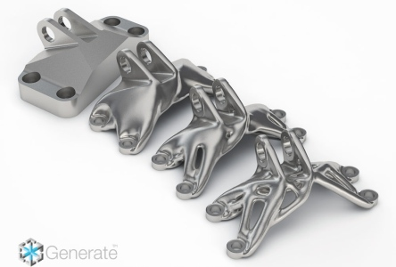
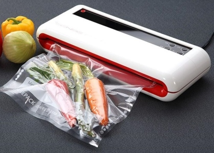
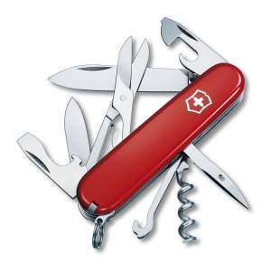
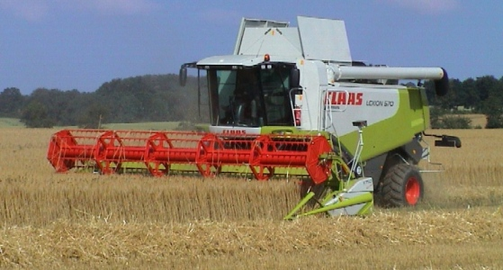
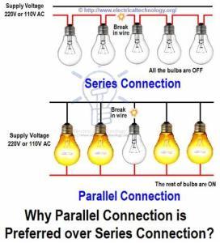
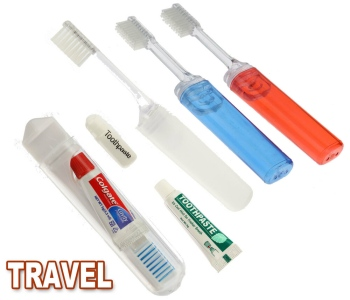
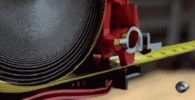
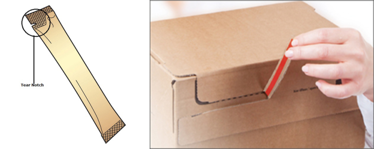
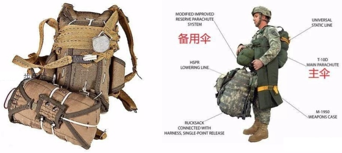
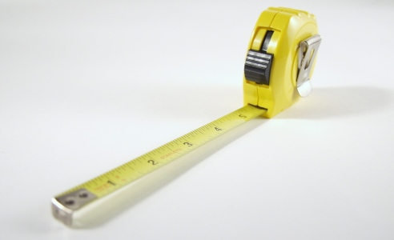

设计方法学 Design Methodology
Table of Contents
1 设计方法学概述
1.1 方法论的发展
四个时期：自然哲学时期 | 分析为主的方法论时期 | 分析与综合并重的方法论时期 | 综合方法论时期
1.1.1 自然哲学时期
从古代朴素自然观到16世纪近代科学的产生
- 人们将世界看做一个混沌的整体，表现为哲学、自然科学和方法论三者没有分开。
- 这一时期方法论的最高成就是亚里士多德的逻辑学和欧几里得几何学中的方法论思想。
1.1.1.1 亚里士多德的逻辑系统以三段论为核心
- 如果所有B是A
- 并且所有C是B
- 那么所有C是A
1.1.1.1.1 演绎推理
- 如果所有人都是要吃饭的
- 并且所有中国人都是人
- 那么所有中国人都是要吃饭的
1.1.1.1.2 归纳推理
从个别到一般的过程
- 假如技术娴熟的舵工是最有能力的舵工，
- 技术娴熟的清洁工是最有能力的清洁工，
- 那么一般地说，技术娴熟的人就是在某一特定方面最有能力的人
- （白天鹅与黑天鹅?）
1.1.1.1.3 归谬法
归谬法先规定它所要反驳的命题，然后用它推出一个公认的谬误。
1.1.1.1.4 例证法
包括演绎、归纳与类比的一种推理方法
1.1.1.2 欧几里德几何方法论
把公认的一些几何知识作为定义和公理，在此基础上研究图形性质，推导出一系列定理，组成演绎体系。
- 1、任意两个点可以通过一条直线连接。
- 2、任意线段能无限延长成一条直线。
- 3、给定任意线段，可以以其一个端点作为圆心，该线段作为半径作一个圆。
- 4、所有直角都全等。
- 5、若两条直线都与第三条直线相交，并且在同一边的内角之和小于两个直角和，则这两条直线在这一边必定相交。
其中公理五又称之为平行公设（Parallel Postulate），叙述比较复杂，并不像其他公理那么显然。这个公设衍生出“三角形内角和等于一百八十度”的定理。 并非必然的几何真理，也就是“三角形内角和不一定等于一百八十度”，从而发现非欧几里得的几何学，即“非欧几何”（non-Euclidean geometry）。
1.1.2 分析为主的方法论时期
从16世纪经典力学建立到19世纪初期。
- 这一时期自然科学相继分化出来，并形成各自的研究方法，
- 而哲学则担当了方法论的职能，哲学的范畴、原理、世界观都作为自然科学研究的方法论出现。
- 1620年，培根的《新工具》探讨了新的认识方法 (经验归纳法)，成为归纳法的基础，推动了近代科学的发展。
- 笛卡尔在《谈方法》一书中提出唯理论的演绎法，突出了理性的推理与分析。这些方法都是以分析为主的哲学方法论。
1.1.3 分析与综合并重的方法论时期
从19世纪40年代到20世纪中叶
- 一方面: 分析方法论有了重大发展
- 另一方面: 自然科学实现两次重大综合
1.1.3.1 分析方法论的重大发展
数理逻辑和分析哲学作出重要贡献。
1.1.3.2 自然科学的重大综合
- 能量守恒和转化、细胞学说和进化论在很大程度上实现了宏观领域自然科学的综合;
- 相对论和量子力学理论的创立实现了宏观和微观的理论综合；
- 这一时期，综合的思维方式日益受到重视。
1.1.4 综合方法论时期
从20世纪中期开始
- 出现许多综合学科，如各种边缘学科、横断学科 (系统论、控制论、信息论)、综合性学科 (环境科学、能源科学、航天科学等)。
- 这些学科的迅猛发展极大促进了综合方法论的发展。
1.1.5 社会化创新模式
经验和知识 –设计(思考)–> 创新 –> 新知识
- 文化知识 – 个人创作 – 社会活动

1.2 设计方法学定义
设计方法学是研究解决设计问题的进程的一般理论。
- 包括一般设计策略及用于设计工作各个具体部分的方法措施；
- 主要领域包括进程模式、进程规划、进程风格、方法、方法学及行动规划、工作方法、工作原则等。
1.3 现代设计方法
突变论方法 | 信息论方法 | 系统论方法 | 离散论方法 | 智能论方法 | 控制论方法 | 对应论方法 | 优化论方法 | 寿命论方法 | 模糊论方法 | 艺术论方法
设计是一种创造性的活动，其目的是为物品、过程、服务以及它们在整个生命周期中构成的系统建立起多方面的品质。
- 生产力的发展与变革，引起了科学交叉、综合及各种科学方法论的发展与变革。
- 设计是实现事物发明创造的过程，设计创新寓于现代科学方法论之中。
- 现代设计的主要特点是优化、动态化、多元化及计算机化。
1.3.1 突变论方法
突变论研究非线性系统从一种稳定组态跃迁到另一种稳定组态的现象和规律。
- 玻璃瓶放置状态的突变: 稳定态->非稳定态->稳定态
- 突变论是混沌理论（Chaos Theory）的一部分
1.3.1.1 渐变和突变
- 前者如植物正常生长,行星绕太阳运行;后者如火山爆发、地震、新星爆发、股票暴跌、爆款产品。
- 连续性范畴和间断性范畴的区别（波粒二相性？）
1.3.1.2 突变类型
- 劣型
- 优型
1.3.1.2.1 劣型
普通意义的突变：系统遭到了破坏并不可逆转地让位于另一个系统
1.3.1.2.2 优型
突变论意义的突变：突变没有使系统消灭,是系统得以“生存的手段”,它帮助系统脱离通常的特征状态。

财富来源于更好地突破现状、把握未知，而非更好地完善已知（当然，完善已知也可创造财富）
突变是摆脱积重难返的现有产品系统巨大惯性的唯一出路
- 一刀两段、一刀斩乱麻
1.3.1.3 突变与设计的两点关系
- (关键)细节决定成败
- 寻求“满意解”而非“最优解”
1.3.1.3.1 细节决定成败
蝴蝶效应现象，是指事物发展的结果对初始条件和边界条件具有极为敏感的依赖性。初始条件极小的偏差将会引起结果的巨大差异（龙卷风）。
- 大停电事故，造成了60亿美元的直接损失。经联合调查小组的专家证实，其原因却非常简单，不过是一些长得过分茂密的树丛使俄亥俄州克里夫兰附近的电线短路。
1.3.1.3.2 寻求“满意解”而非“最优解”
当断不断，必为所乱。在做决策的时候，不追求绝对最优的决策，转而追求简洁高效的满意解甚至非劣解（Pareto解）即可。
- 突变论也指出高度优化的设计（最优解）很可能有许多不理想的性质，因为在结构上、性能上追求最优，常常鲁棒性很差，稳定性不高，对方案中可能的缺陷具有高度敏感性。
1.3.1.4 突变与设计方法
各种创造性设计法：头脑风暴法、逆向发明法、灵感法等，均能产生罕变机理。
1.3.2 信息论方法
1.3.2.1 信息的定义
- 信息是确定性的增加-—逆Shannon信息定义；
- 信息是物质、能量、信息的标示-—Wiener信息定义的逆;
- 信息是事物及其属性标识的集合。
1.3.2.2 信息量的确定
一个事件给予人们的信息量多少，与这一事件发生的概率(可能性)大小有关。
- 一个小概率事件的发生，如“唐山发生七级以上大地震”使人们感到意外，它给人们的信息量就很多。
- 相反一个大概率事件的出现，如“12月15日北京下雪”给人们的信息量就很少。
1.3.2.3 信息论
信息论是一门用数理统计方法来研究信息的度量、传递和变换规律的科学。它主要研究信息的获取、变换、传输、处理等问题。
- 扩展为一门研究信息的产生、获取、变换、传输、存储、处理、显示、识别和利用的信息科学。
- 常用方法有预测技术法、信号分析法 (相关分析法、方差分析法、状态方程分析法)、信息合成法等。
1.3.2.4 信息系统的主要性能指标
有效性和可靠性
- 有效性就是在系统中传送尽可能多的信息；
- 可靠性是要求信宿收到的信息尽可能地与信源发出的信息一致，或说失真尽可能小。
- 但，可靠性和有效性往往相互矛盾，应使系统在规定的失真或基本无失真条件下，传送最大的信息率。
1.3.2.5 语法、语义、语用信息
语义应考虑各符号的意义，同样一种意义，可用不同语言或文字(语法信息)来表示。
- 一般，语义信息率可小于语法信息率；例: 电报信息率可低于表达同一含义的语声的信息率。
- 更进一步，信息接受者往往只需要对其有用的信息；听不懂的语言或有意义，但对接受者也是无用的。所以语用信息一般又小于语义信息。
1.3.2.6 信息方法的特点
用信息概念作为分析和处理问题的基础
- 撇开研究对象的具体结构和运动形态,
- 把系统的有目的性运动抽象为信息变换过程。
1.3.2.7 信息方法的准则
- 功能准则
- 整体准则
1.3.2.7.1 功能准则
运用信息方法对复杂事物进行研究时,
- 不需要对事物的具体结构加以解剖性的分析,
- 而是对其信息流程加以综合性的考察,
- 着眼于该系统在与环境交互作用过程中的动态功能,从而获得关于事物整体的知识.
1.3.2.7.2 整体准则
- 信息方法不是割断系统的联系,不是用孤立的、局部的、静止的方法研究事物,
- 也不是那种在剖析的基础上进行简单的机械综合,
- 而是直接从整体出发,用联系的、全面的、化的观点去综合分析系统运动过程.
1.3.2.8 信息方法的作用
- 揭露不同物质运动形态之间的信息联系
- 信息方法为科学技术、生产过程、社会管理提供有效手段
- 信息方法揭示事物运动的深层规律
- 提高人们掌握和运用客观规律的能力
1.3.2.8.1 揭露不同物质运动形态之间的信息联系
人脑和机器
- 人脑是一百多亿种细胞组成的，神经细胞可以处于兴奋和抑制两种状态。
- 而电子计算机是由许多电子器件组成的机械，相应地有接通和断开两种状态。
- 人脑工作的特征是利用神经脉冲，而机器可以利用电脉冲。
- 机器与人脑都具有从外界获得信息、加工处理、传递信息的能力，它们存在着共同的信息联系，可以把它们看做是一个信息变换的系统。
- -> 机器模拟人脑
1.3.2.8.2 信息方法为科学技术、生产过程、社会管理提供有效手段
例，铁路运输管理，其中有许多具体变化难以事先预测。
- 需要根据线路、货栈、机车、车辆、装卸能力、运行时间和流向等情况，把各种信息加以综合处理，
- 以获得最合理、最经济的调度方案，并不断加以调整。
1.3.2.8.3 信息方法揭示事物运动的深层规律
许多以往让人无法理解的病变和症状，正是由于遗传信息密码及组合发生了变化
1.3.2.8.4 提高人们掌握和运用客观规律的能力
动物之中具有完整的发送和接受信息的生物通讯系统。
- 它们通过气味、姿态、色彩、超声波、电磁场等多种形式，互相递送信息。
1.3.3 系统论方法
以系统整体分析及系统观点来解决各领域具体问题。
- 系统是由若干要素以一定结构形式联结构成有某种功能的有机整体。
- 步骤：系统分析(管理) -> 系统设计 -> 系统实施(决策)
- 具体方法：系统分析法、逻辑分析法、模式识别法、系统辨识法等。
- 学科分支：管理系统工程、环境系统工程、人才系统工程、产品系统开发工程（内外因素和生命周期）
- 系统分析方法有：投入产出法、相关表法、PERT法、因果分析图法、雷达图分析方法、关联图法和矩阵图法

1.3.3.1 投入产出法
Input-Output Technique 输入输出法
- 通用电器公司用于探求设想。
- 确定期望产出(结果和目标,明确输入输出) -> 决定投入 -> 利用智力激励法寻求投入产出关系。
- 同时确定限制条件，如成本不超过某值、坚固耐用等。

1.3.3.1.1 例: 天黑灯自亮问题
- 输入: 天黑下来, 输出: 灯自亮
- 根据入、出和限制条件，考虑相互关系，
- 运用创造性思维和逐步推敲明确入和出联系，分析出解决问题方案。
1.3.3.2 相关表法
探讨设计问题中相关要素间关系为目的
- 分解设计问题 -> 分析比较 -> 明确主次问题 (关系最重要、希望产生关系和无关系)
- 例：街道清扫系统要素相关表

1.3.3.3 PERT法
Program Evaluation and Review Technique 评测复审法
- 有效应用PERT法可缩短工期，提高效率。
- 包括PERT/TIME、PERT/MAN-POWER和PERT/COST (时间、人员、费用)

1.3.3.3.1 利用PERT制订计划方法
- 基本图示符号
- 规则
- 基本步骤
- 圆圈: 事件结点，不需时间和资源。圈内为作业名称或数字
- 箭头线: 作业过程
- 虚箭头线: 两结点间无实际作业，仅示先后顺序
- 箭头线顺序发展（无回路）
- 结点编号逐渐增大，可跳号以补充修改作业，但不可重复编号。
- 符合实际工作程序。

- a. 制订整体计划 (时间、人、物与资金)
- b. 分析确定所需全部作业项目
- c. 构造网络
- d. 计算日程
- e. 配置资源
- f. 预算费用
- 在估计时间、资源等问题时，可按乐观、悲观、最可能情况估算，取平均值Te=(a+4m+b)/6
- 例：乐观3天完成、悲观10天完成、最可能5天完成 -> (3+4*5+10)/6 = 5.5天
1.3.3.3.2 大型儿童游乐玩具项目设计计划
应将时间、人员、费用，及资源配置等因素估计或计算进去，以使系统开发工作过程得到有效控制。
- a 调查准备 (a1准备调查记录本卡;a2研究调查场所;a3确定调查人员;a4准备调查用具。)
- b 实地调查 (b1现状调查;b2资料整理。)
- c 收集有关大型游乐玩具资料 (c1杂志、商品选购指南;c2市场上有关玩具。)
- d 有关儿童身体发育资料 (d1图表化处理;d2按年龄等分类处理。)
- e 活动分析 (e1活动种类;e2动作分析;e3把握活动意义。)
- f 分析游乐时使用物品 (f1分析物品;f2物品特征;f3分析游戏与物品关联性。)
- g 综合化 (g1:d、e、f关系明确化;g2图形化。)
- h 展开 (h1意念性草图;h2比较 c、g;h3设计定位;h4草模。)
- i 基本设计 (i1基本形态、结构确定;i2预想图绘制;i3细部审核;i4修正。)
- j 制作模型 (j1绘制模型工程图纸;j2选择模型材料;j3模型制作完成;j4拍摄模型照片;j5对模型审核。)
- k 评价
- l 试销准备 (l1创意和设想;l2调查;l3根据调查结果修改设计预想图;l4修改或重新制作模型;l5信息整理。)

1.3.3.4 因果分析图法
Cause and Effect Diagram 鱼骨图
- 以图示方法揭示关系而认清相关因素间影响。
- 着眼问题结果和对问题结果产生影响的原因。
- 箭头顶端表示设计问题或其它问题要点，大、中、小骨分别表示大、中、小原因。
1.3.3.4.1 绘制鱼骨图方法
- 确定问题要点 (要分析项目)，如机械加工为什么出现废品。
- 确定大原因，如机床、方法、操作者等。
- 继续找出中原因和小原因及更细原因。
- 对关键原因作标记以便进一步研究。(鱼骨图可转化成树形图)


1.3.3.5 雷达图分析方法(radar chart)
一种多变量对比分析技术,形似导航雷达图或蜘蛛网。
- 雷达图可对多组变量多种项目对比,反映数据相对中心点和其它数据点变化情况。
- 适于对多属性体系结构描述对象作出全局、整体评价(如：判断产业发展趋势、确定产业范围边界)
1.3.3.5.1 图示说明
- 档次渐高,边缘为最高档,由若干同心圆组成。
- 同心圆向外引若干条射线,等间距。
- 每个圆代表一定分值,由中心向外分值增加。
- 每条射线末端标明指标。

1.3.3.5.2 例：产品功能属性用户评价雷达图
功能性(实用)、技术性、艺术性(造型)、舒适性(人机)、经济性(性价比)、环保性等评价。
1.3.3.6 关联图法(网络)
分析原因一结果、目的一手段等各因素间互相影响、制约
- 据逻辑联系，寻求最有效解决措施。
- 箭头由原因指向结果，或由手段指向目的，或由因素指向问题等。
- 重点项目可用双框。

1.3.3.7 矩阵图法
- 运用矩阵形式多维分析。将问题分解，找出全部因素并分类，
- 把属于因素群R的因素R1、R2、…、及属于因素群L的因素L1、L2、…、排成行和列，
- 在行和列交点处表示出设想点，据以探求问题所在及解决问题方法。


1.3.3.8 作业一
- 选择3~4款产品运用至少一种分析方法（比如雷达图分析方法、矩阵图法等）进行分析比较，明确各自优缺点；
- 根据分析结果，结合产品基本功能结构分解（可用功能结构系统图表示），再重组升级为新的设计方案（只需表达清楚概念和产品结构关系，可手绘草图或相关软件表达）
- 做成PPT，9月12日(周四)23:00前发送到anhongz@outlook.com
- 文件名: DM1-标题-姓名
- 文件类型: 演示文稿或PDF文档
1.3.4 离散论方法
与系统论方法相对，将复杂、广义的系统离散为分系统、子系统、单元
- 以求得总体的近似与最优解。
- 常用方法：微分法、隔离体法、有限单元法、边界元法、离散优化法等。
1.3.4.1 有限单元法


1.3.4.2 边界元法
BEM(boundary element method，边界元法)是一种继有限元法之后发展起来的一种新数值方法
- 与有限元法在连续体域内划分单元的基本思想不同，边界元法是在定义域的边界上划分单元，用满足控制议程的函数去逼近边界条件。
- 所以边界元法与有限元相比具有单元的未知数少，数据准备简单等优点。
- 但用边界元法解非线性问题时，遇到同非线性项相对应的区域积分，这种积分在奇异点附近有强烈的奇异性，使求解变得困难。
1.3.4.3 离散优化法
离散优化问题，又称为整数规划 (线性整数规划)
- 纯整数规划: 全部决策变量取整数值；
- 混合整数规划: 允许一部分决策变量连续，其余决策变量取整数值；
- 二进制(0-1)规划: 限制全部决策变量不是0就是1。
1.3.4.3.1 背包问题 (Knapsack problem)
给定一组物品，每种物品都有自己的重量和价格
- 在限定的总重量内，我们如何选择，才能使得物品的总价格最高？
- 即：在总重量不超过W的前提下，总价值是否能达到V？

1.3.5 智能论方法
运用智能理论，采取各种方法、工具去认识、改造、设计各种系统。
- 常用方法：计算机求解、设计、控制; 机器人技术、仿生物智能(swarm intelligence, neural networks (machine learning), evolutionary algorithm)、专家系统等。
- 应用：计算机辅助设计

1.3.5.1 生成设计 Generative Design

1.3.5.2 进化设计 Evolutionary Design

1.3.5.3 群体智能 Swarm Intelligence

1.3.6 控制论方法
研究动态的信息与控制、反馈过程，以使系统在稳定的前提下正常工作。
- 将系统、过程和运动看成一个复杂的控制系统 (自动化技术)。
- 常用方法：动态分析法、柔性设计法、动态优化法、动态系统辨识法等。
1.3.6.1 控制论基本原理
据系统与环境关系，用“输入”(环境对系统的作用)和“输出”(系统对环境的响应)揭示和描述系统行为，达到认识和控制该系统的目的。
- 负反馈：通过负反馈信息实现自稳控制，当正常运转的系统受到外来干扰而偏离稳定点时，利用控制系统的负反馈信息调节，维持系统按控制所要达到的目的而运行。
- 正反馈：当系统需要由旧质态转变到新质态时，就通过正反馈信息进行自组控制，改变系统的结构和行为方式，经过重组形成新的稳定系统，适应环境。
1.3.7 对应论方法
各类事物间存在某些共性或相似的恰当比拟，具有大量而普遍的对应性。
- 以相似或对应模拟作为思维和设计方式的科学方法，即为对应论方法。
- 常用于已有成熟的参照对象而尚未掌握设计对象性状的各种情况。
- 如科学类比法、相似设计法、模拟设计法、建模技术、符号设计法等。
1.3.7.1 类比

1.3.8 优化论方法
用数学方法在给定的多因素、多方案等条件下得到尽可能满意的结果。
- 包括线性和非线性规划、动态规划、多目标优化等优化设计法、控制法、试验法。

1.3.9 寿命论方法
功能与其使用时间，成本之间存在密切关系。
- 以产品使用寿命为依据，保证寿命周期内的经济指标与使用价值，同时谋求可靠性与经济效益。
- 可靠性分析法，可靠性设计法，功能价值工程与价值创新等。
1.3.10 模糊论方法
将模糊问题进行量化解题。
- 主要用于模糊性参数的确定、方案的整体质量评价等。
- 常用方法：模糊分析法、模糊评价法、模糊控制法、模糊设计法等。

1.3.11 艺术论方法
以艺术美感作为出发点，使技术与艺术、科学与美学、创造与工艺紧密联系。
- 主要用于系统、子系统、单体的形态设计、结构设计和表面处理等。
2 TRIZ创新方法
2.1 拆分
需要整理复杂的情况,或希望打破顾此失彼的矛盾状态时,最有效的做法是将问题分开考虑。
- 易拆->不易拆：分割->分离->局部质量->不对称
2.1.1 分割Segmentation
分割对象：空间、时间、错综复杂的问题。
- 遇到棘手问题时，可以首先尝试对情况或对之前的方法进行分割。
- 空间分割 / 时间分割
2.1.1.1 空间分割
- 将物体分成相互独立部分
- 使物体分成易组装和拆卸部分
- 增加物体分割程度
2.1.1.1.1 将物体分成相互独立的部分
多级和多个助推器串并联
- 每级工作结束后可抛掉，获得加速性能，逐步达到预定速度；
- 各级发动机独立工作，可按每级飞行条件设计发动机，处于最佳工作状态；
- 灵活选择每级推力大小和工作时间，以适应轨道要求及载人飞船对飞行过载的要求。
分割为多个车厢，可根据不同时间段的需要配置车厢数量。


- 用墙壁分成客厅、卧室、浴室等，使卫生间或卧室等与生活空间分开，便于居住。
- 宽敞的房间用隔扇分隔，可根据不同用途灵活使用。

分为冷冻室和冷藏室，并分多层

小格子使食物不串味，且提高强度。

为了便于分割压出凹槽，可以让操作变得更容易。
- 板状巧克力上压有凹槽，很容易掰开。


2.1.1.1.2 将物体分成容易组装和拆卸的部分
通过在考虑组合的基础上分割成多个部分，可以提高适应性和灵活度。
- 方便搬运, 并视空间与个人喜好，重新结合成不同形状


2.1.1.1.3 增加物体的分割程度
分割成更细或更小的单位

浮法玻璃：熔融玻璃从池窑中连续流入并漂浮在相对密度大的锡液表面上，在重力和表面张力的作用下，玻璃液在锡液面上铺开、摊平、形成上下表面平整、硬化、冷却后被引上过渡辊台。辊台的辊子转动，把玻璃带拉出锡槽进入退火窑，经退火、切裁，就得到浮法玻璃。

2.1.1.2 时间分割
利用有限资源。通过时间的分割，可以让很多人共用一个资源。
- 预约使用会议室或文化馆
- 计算机的CPU处理等
2.1.1.3 联想词语
分、分类、分场合、细分、分要素、分隔、时间分割
- 制定日程、零部件、水平分工、磨成粉末、纳米
- 分格便当盒、板状巧克力、咖喱调料块、咖喱粉、电车车厢配置
- 使用会议室的时间段、CPU处理
2.1.2 分离(拆出/抽取)Extract/Taking off
花费能量或时间，把事物分成两个以上（将物体中有用或有害部分提取出来）。
- 分割原理用于较易拆分事物，而分离原理强调消耗能量去分离、消除或提取。
- 遇到问题时，可考虑空间分离、时间分离、条件抽取。
2.1.2.1 抽出负面影响的部分或不需要的属性
2.1.2.1.1 避雷针将雷电引入地下，减少其危害

2.1.2.1.2 将有噪音的空调压缩机放在室外

2.1.2.1.3 食品真空包装

2.1.2.1.4 泡茶器把茶叶隔离


2.1.2.2 从物体中抽出必要的部分或属性
2.1.2.2.1 把彩喷打印机中的墨盒分离出来以便更换

2.1.2.2.2 用光纤分离主光源，增加照明点

2.1.2.2.3 隐形眼镜即是眼镜架与镜片离散后的新产品
2.1.2.2.4 音箱是扬声器与收录机整体的离散
2.1.2.2.5 活字印刷即是原来整体刻板的分离

2.1.2.2.6 搜索引擎
2.1.2.3 联想词语
限定、提取、隔离、集锦、去除、选拔、替换、压缩、煎煮、过滤、沉淀、以外
- 提取对象物、撇去浮沫、茶、三角形垃圾桶、人车分离式信号灯
- 去除有害物质、清理垃圾、数据化、缩印版
2.1.3 局部质量Local quality
想拆分却无法拆时，通过改变局部性质，可以实现有所区别的操作。
- 无法分开或不宜分开的情况下，有时可以有所偏重，分成浓度高的部分和浓度低的部分。
- 在物体的特定区域改变其特征，从而获得必要特性。
2.1.3.1 变同质(一致)结构为异质(不一致)结构
若整体成本太大，可改变局部或有所偏重来解决问题
- 采用温度、密度或压力梯度。不必冷却所有地方，只冷却需要冷却的部分，节约能量。
- 该原理与“#35参数变化原理” 组合使用，有时可能会解决问题。
2.1.3.1.1 刀面和刀刃
- 刀刃用硬度高、耐磨好钢，其余部分用一般钢
2.1.3.1.2 书页和封皮
- 封面用较厚和耐用纸，内部用一般纸
2.1.3.1.3 高尔夫球杆
高尔夫球杆的重量主要集中在球杆头部分(有所偏重的局部质量-网球拍)。


2.1.3.1.4 杯子切口
增加杯子切口，防止倒水泄漏

2.1.3.1.5 提高物体某一部分"浓度"不局限于物品。
- 零售商店的限时促销是只在一定时限内进行的强化宣传。
- 只对一部分收费会员赠送礼品的服务。


2.1.3.2 使组成物体不同部分实现不同功能
2.1.3.2.1 多功能锤
锤子一边做成平的一边做成扁的，增加锤子的切削功能

2.1.3.2.2 多功能削皮器

2.1.3.2.3 瑞士军刀

2.1.3.3 物体每一部分均处于最有利于其工作的条件
使组成物体每一部分最大限度发挥作用。
2.1.3.3.1 带橡皮铅笔

2.1.3.3.2 带起钉器榔头（起钉锤）
2.1.3.3.3 午餐盒被分成放热食、冷食及液体空间
- 餐盒格子，防止串味

2.1.3.3.4 汤勺每一部分都有相应的工作条件

2.1.3.3.5 多角橡皮
把局部性质扩大到整体。 在橡皮上制造出多个“角”的部分，更容易擦掉细小的地方。

2.1.3.4 联想词语
张弛、偏重、极端、浓缩、部分的、有特征的、仅一部分、变形、强化、
- 暂时的、限定的、附加费、限时促销
- 高尔夫球杆、多角橡皮、纸币（水印、凹凸、局部光泽、嵌入文字）
2.1.4 不对称Asymmetry
在设计物品时，一般画成大小对称形。但此举行不通时，可通过不对称因素来解决问题。
- 物体对称形式转为不对称形式。
- 若物体不对称，则加强不对称程度。例：防撞汽车轮胎有高强度侧缘，以抵抗人行道路缘石碰撞。
2.1.4.1 防止错误连接
2.1.4.1.1 HDMI端口或微型USB连接器
为防止插反，把连接器做成梯形或设置突起。如果设置提示，则更能顺利无误地连接。
- 没有做成长方形或圆形等对称形，而是略微不对称。确保连接器以正确方向插入。
- USB怎么都插不进去而烦躁的经历，因为这种连接器的外观乍看上去呈对称的长方形。
2.1.4.1.2 存储卡(SD卡)
四个角中的一角缺失，可以便于人们弄清插入的方向，防止插反。
2.1.4.1.3 电源插头
做成不对称形式，防止插错

2.1.4.2 方便操作
2.1.4.2.1 杯子带有把手

2.1.4.2.2 球棒
握在手里的部分和击球部分的粗细不同，呈不对称形状。

2.1.4.2.3 摄像机
为了便于单手持握，只在一侧安有皮带。
2.1.4.2.4 汽车加速踏板和刹车踏板形状不同

2.1.4.2.5 将液化气瓶底部设计成斜面，气用完时会自己倾倒

2.1.4.2.6 电力治炼做电极非对称置于炉中
方便矿石送入和金属溶液流出。
2.1.4.3 产生多样性
列车座位排列成不对称的一侧3个、另一侧2个
- 满足3个人、4个人、5个人、6个人等不同人数需求。

2.1.4.4 获取动力
不对称的形态还有可能由此得到重力、电力等产生的动力。
- 电池通过电极金属的不对称性状态产生电力。
- 柠檬里插入不同金属可以成为电池，不对称性能够产生能量。
2.1.4.5 杠杆原理
通过距离支点的不同距离，实现输出更大的力，使移动距离更大等目的。

2.1.4.6 利于稳定
做成不对称形状则可以取得平衡，变得稳定。
- 公路转弯处外高内低, 消减离心力
- 铁道转弯处内外铁轨间有高度差以提供向心力，减少对轨道挤压造成的危害

2.1.4.7 加强不对称
如果物体已经不对称，则加强它的不对称程度。
- 为增强防水保温性，建筑上采用多重坡屋顶
2.1.4.8 联想词语
梯形、槽口、突起部分、大小、不齐全、让分赛、有意破坏对称性和平衡、交错、把手部分、配合整体、
- 电池、连接器的接口部分、记忆卡的缺口、球棒、录像机的手持部分
2.1.5 例：浴室
- 分割：浴室被分割为淋浴和浴缸，淋浴较为清洁。
- 分离：浴室被“拆分”到房子一角，让湿气通过窗户或换气扇散到外面。
- 局部质量：淋浴头把水流集中到局部，可以解决“节水”和“时间浪费”之间的矛盾。
- 不对称：浴缸底面朝排水孔略有倾斜，利用重力让浴缸中的水快些排净。
2.1.6 例：吃饭&烹调
- 分割：便当盒里的格子；米饭、酱汤和菜分别装进不同的容器。
- 分离：做饭撇去浮沫、去除骨头，通过淘米去除米糠、通过过滤去除纤维使食物口感更细滑。
- 局部质量：酱油只蘸生鱼片一角，只在鱼皮上撒，调料集中于局部，味道和盐的平衡。大火烧热平底锅，先把牛肉表面煎好。
- 非对称：筷子握手里的一端粗一些、用于夹菜的尖端细一些，较易剔掉鱼肉里的小刺。
2.1.7 练习：手
- 一只手有5根手指 (分割原理)
- 5根手指中只有大拇指朝向另一边 (非对称原理)
- 指甲是皮肤分化、变硬后形成的 (局部质量原理)
- 指甲(没有血管和神经)剪掉也不会疼 (分离原理)
- 手指被关节分成3节 (分割原理)
2.1.8 练习：做咖喱饭
- 削掉胡萝卜和土豆的皮 (分离原理)
- 为了方便食用，把胡萝卜和土豆切成可以一口吃进去的大小 (分割原理)
- 先炒一下蔬菜和肉，将表面的局部用油做出涂层，防止炖碎 (局部质量原理)
- 容易炖碎的土豆晚些(改变炖煮时间)下锅 (非对称原理)
- 煮的过程中撇去浮沫 (分离原理)
- 为了使咖喱调料块易于溶解，掰开后再放进锅里 (分割原理)

2.2 组合
将不少于两种的技术、产品的一部分或全部适当结合，形成新原理、新技术、新产品。
2.2.1 组合方法
- 主体添加法：在原有思想、原理、产品结构、功能中补充新内容。
- 异类组合法：至少两种不同领域思想、原理、技术组合，有较大整体变化，创造性较强。
- 同物组合法：增强功能、意义，产生新的事物。
- 重组法：将研究对象在不同层次上分解，以新的意图重新组合，更有效地控掘和发挥科技潜力。
2.2.2 组合实例
- 主体添加：太阳能多功能计算器
- 异类组合：复合材料
- 同物组合：统一尺寸的拼插积木拼出各种形状
- 重组：金刚石和石墨
2.2.2.1 主体添加：太阳能多功能计算器
- 计算器用太阳能电池，装上日历、钟表，组合得到新产品。
2.2.2.2 异类组合：复合材料
- 不同金属与金属或非金属可组合成性能良好的各种复合材料。

2.2.2.3 同物组合：统一尺寸的拼插积木拼出各种形状
2.2.2.4 重组：金刚石和石墨
同是碳原子，以不同处理、不同晶格的组合，便可合成性能、用途完全不同的物质
- 如坚硬而昂贵的金刚石和脆弱的良导体石墨。

TRIZ组合
- TRIZ05合并(联合)Merge
- TRIZ06多用性Universality
- TRIZ07嵌套(套装)原理Nested-doll
- TRIZ08反重量(配重原理)Anti-weight
2.2.3 TRIZ05合并(联合)Merge
把两个以上(通常用于相同场合)事物(串联或并联)组合起来，便于使用。
- 把相同物体或完成类似操作物体联合起来。
- 把时间上相同或类似操作联合起来。
2.2.3.1 把相同物体或完成类似操作物体联合起来
- 航天飞机、联合收割机
- 双联显微镜组、多功能铅笔、插排
- 组合电路、集成电路、并行计算
- 钢琴、鸡尾酒、牙刷和牙膏配套、梳子
- 洗衣夹子和衣架组合、拖布
- 蜂房结构、店铺林立的商业街
2.2.3.1.1 航天飞机
- 火箭与飞机的组合

2.2.3.1.2 联合收割机

2.2.3.1.3 双联显微镜组：由一个人操作，另一个人观察和记录
2.2.3.1.4 带橡皮的铅笔、自动铅笔、红蓝铅笔
2.2.3.1.5 由多个插座组合而成的插排
2.2.3.1.6 小灯泡和电池串联或并联产生不同特性

2.2.3.1.7 集成电路上的电子芯片

2.2.3.1.8 并行计算的多个CPU和GPU
2.2.3.1.9 钢琴(琴键组合，do re mi fa so la si do音阶周期排列)

2.2.3.1.10 鸡尾酒

2.2.3.1.11 牙刷和牙膏配套

2.2.3.1.12 梳子(梳齿组合)
2.2.3.1.13 洗衣夹子和衣架组合

2.2.3.1.14 拖布(布条组合)
2.2.3.1.15 多个六边形排在一起形成结实的蜂房结构
2.2.3.1.16 比起单独一家店铺，店铺林立的商业街可创造更高销售额
2.2.3.2 把时间上相同或类似的操作联合起来
- 冷热水龙头
- 撮影机拍摄影像时同时录音
- 音乐CD与商业广告合作
- 外卖比萨饼
2.2.3.2.1 冷热水龙头
2.2.3.2.2 撮影机拍摄影像时同时录音

2.2.3.2.3 音乐CD与商业广告合作

2.2.3.2.4 “外卖比萨”就是“快递+比萨店”。

2.2.3.3 与合并相关的其它原理
- #10预先作用原理：把用于相同场合的不同事物预先组合起来的。
- #19周期性动作原理：把相同事物以特定的模式周期性地组合起来的。
- #36相变原理：同一种物质由于结晶构造不同，也会呈现不同的特性。
2.2.3.4 联想词语
一体化、合并、合体、合作、糅合、新种类、毗连、并联、串联
- 带橡皮的铅笔、外卖比萨、动作角色扮演、蜂房结构、结晶构造
2.2.4 TRIZ06通用性Universality
一个物体执行多种不同功能，因而不需其它物体。一物多用。
- 想增加功能，又不想增加零件或尺寸时，就可以用“通用性原理”。
- 与“合并原理”相比，“通用性原理”更适用于多个零件用于不同场合，很多时候像多功能刀。
2.2.4.1 实例
- 提包提手可同时作为拉力器。
- 多功能刀：通过刀柄通用部分，解决功能多与体积大的矛盾，使用途广泛，便携。
2.2.4.1.1 7段码显示法
用摆成数字8的形状的7根数码管通过开关组合，来显示出0～9的数字。

2.2.4.1.2 通用槽螺丝钉
十字槽中间的“—”字凹槽做得更长，用一字螺丝刀也可拧紧。

2.2.4.1.3 晴雨两用伞等都具备可以应对不同情景或对象的通用性。

2.2.4.1.4 客卧两用房间
铺上被子用作卧室，收起被子就是客厅
- 一室两用可以有效利用空间。

2.2.4.1.5 荧光笔的两端共用墨水部分
分别写较粗和较细的字。不用的一侧可盖上笔帽。

2.2.4.2 联想词语
身兼二职、一举两得、多种场合、兼用、通用零部件、平台、通货、通用模块、通用设计
- 数码数字、多功能刀、筷子、菜刀、智能手机、客卧两用房间、十字一字通用螺丝钉、云服务、Web API、通用电脑板
2.2.5 TRIZ07嵌套(套装)原理Nested-doll
把物体放入内部，避免并列组合时，体积增大。
- a．物体k+1位于物体k内
- b．物体k+1通过物体k的空腔
2.2.5.1 实例
- 弹性振动超声精选机由两个互相夹紧半波片构成。为减小精选机长度和增大稳定性，两个半波片制成相互套在一起的空锥体。
- 缩小变压器压电元件输出部分外形尺寸。
2.2.5.1.1 俄罗斯套娃, 内部嵌套收纳
2.2.5.1.2 三脚架
伸缩杆、钓鱼竿和波纹管利用内部空间，携带时变短、使用时变长。

2.2.5.1.3 一本书第1部分第2章第3节的嵌套层次
2.2.5.1.4 如果企业员工很多，就会设置部门、科室等层次化组织结构
2.2.5.1.5 文件夹的嵌套结构可以帮助我们管理大量文件
2.2.5.1.6 时间采用年、月、日、小时、分、秒表示
比只用秒表示更方便
2.2.5.1.7 分形结构（自相似结构）
叶脉周期性嵌套结构。
- 通过计算分形结构，模拟树木、云朵等形象。

2.2.5.1.8 包里再放小包，可把物品整理得一目了然
2.2.5.2 联想词语
内部、层次化、目录结构、树结构、分形结构、组织结构、嵌套、
- 三脚架、钓鱼竿、波纹管、章节结构、条款、域、URL、HTML、树木、钱、夹馅饭团、
2.2.6 TRIZ08反重量(配重原理)Anti-weight
为取得平衡而进行组合，解决做功量与重量之间的矛盾。
- a．将物体与有上升力另一物体结合以抵消其重量。
- 例：用滑轮将相反事物平衡组合。
- b．将物体与介质(气动/液动力)相互作用以抵消其重量。
- 例：如需改变转动物体质量，但质量不能改变，可改成翼状，由翼片倾角获得附加力。
- 例：浮力
2.2.6.1 电梯(滑轮和配重)
电梯装置通过滑轮利用相反一侧的平衡重物。
- 平衡重物在电梯上升时下降，下降时上升，节省电梯上下所需能量。
- 需要举起重物时，可以考虑利用滑轮。

2.2.6.2 船舶飞机(浮力和升力)
获得浮力与重力的平衡，才能沿水平方向稳定移动。
- 船舶、浮标、救生圈或浮力板等放入液体中。测量吃水线可算出重量。
- 飞机能够在空中飞行，是因为机翼产生的升力与飞机的重量取得平衡。

2.2.6.3 天平
利用平衡原理称量重量
2.2.6.4 双肩包
让双肩平均负重，从而使全身承担重量

2.2.6.5 联想词语
平衡、浮力、升力、滑轮、价格、代价、对抗、重力、重心、对手
- 电梯、天平、救生圈、飞机、衣架、复式记账法
2.2.7 例：列车
- 卧铺车厢或硬座车厢：电车与床或座椅的组合(#5合并原理)
- 卧铺车厢可以把座椅放倒，当作床来使用：一个座椅两种用途(#6普遍性原理)
- 缆车两两相向运行：一辆上山时另一辆在下山,上山车辆和下山车辆相互的重量平衡(#8配重原理)
- 不同级别的列车(慢车、快车、特快)：慢车在快车停留的车站也会停车，慢车短途停靠, 效率低，但覆盖面广(#7嵌套原理)
- 在车站建购物中心：在车站附近（#5合并原理）和内部（#7嵌套原理）设购物中心
2.2.8 例：卧室
- 房间使用被子时是卧室，铺上坐垫时是客厅，摆上餐桌便成餐厅：一室三用（#6普遍性原理）
- 天气寒冷时，把毛巾被、羽绒被、毛毯摞起来盖：同类物品一起使用（#5合并原理）
- 有的床也可以收纳睡衣等物品：既能当作床来使用又具有收纳功能（#5合并原理、#6普遍性原理、#7嵌套原理）
- 枕头在睡觉时支撑头部：低回弹枕头→回弹是指什么？（#8配重原理）
2.2.9 作业二
- 基于拆分或组合原理，选择一款或一系列产品分析其设计方法（拆分当中的分割、分离、局部质量或不对称等；组合当中的合并、多用性、嵌套或反重量等）；
- 在此基础上，结合拆分或组合原理构思新的设计方案。
- 做成PPT，10月10日(周四)23:00前发送到anhongz@outlook.com
- 文件名: DM2-标题-姓名
- 文件类型: 演示文稿或PDF文档
2.3 预先
- 被动：恢复原来状态采用#9预先反作用原理、#11预先防护原理
- 主动：推进状况向前发展采用#10预先作用原理、#12等势原理
2.3.1 TRIZ09预先反作用
Preliminary counteraction
- 预先储备逆向能量或提前完成反作用，可迅速自动恢复到原有状态或实现特定功能。
2.3.1.1 卷尺
为测量长度，会把收纳起来的尺子拉出来使用，用完放手之后尺子就能“嗖”地一下收回原处。
- 卷尺里装有发条，保存逆向能量，使用后能迅速卷回。


2.3.1.2 计时器
机械钟表、烤箱的计时器都有发条发挥作用，无须用电就可慢慢移动。

2.3.1.3 自动雨伞
按一下手柄按钮，立刻弹开，因为关闭雨伞时，已把“打开雨伞所需能量”储存在了弹簧里。
2.3.1.4 按压式洗发水
由弹簧把按压的力储存起来，利用不对称的阀，抽取出下一次所需用量。

2.3.1.5 自发光材质
涂有自发光材质的“紧急出口”指示牌
- 没有电也可发光。
2.3.1.6 灭火器和自动喷水灭火装置
灭火器中储备应力，发生火灾时可拔出安全栓，立即使用。
- 预先在内部加压，以便在火灾发生时迅速喷出灭火剂或水。
2.3.1.7 事先固定好家具
防止地震时倒下来，让人安心。

2.3.1.8 退款承诺
为获得顾客信任，事先做出退款承诺，或参加意外保险。
- 在出现问题时补偿损失，使顾客放心。
2.3.1.9 与预先反作用相关的其它原理
- #14曲面化原理：利用弯曲的金属弹簧或发条。
- #37热膨胀原理：灭火器和气囊
2.3.1.10 联想词语
弹簧、发条装置、应力、卷回去、迅速膨胀、迅速的初始动作、紧急对策、保险、保障、补偿
- 卷尺、伸缩胸卡、门、自动伞、自发光涂料、气囊、陷阱、意外保险、灭火器、按压式洗发水
2.3.2 TRIZ10预先作用(预操作)
Preliminary action
- 在事件发生前执行某种作用，预先准备，方便进行。
2.3.2.1 预先完成要求作用(整个或部分)
2.3.2.1.1 不干胶
事先涂好胶方便使用
2.3.2.1.2 邮票打孔便于撕开
- 邮票上预先压有便于撕开的小孔;
- 背面涂有可用水粘贴的胶，用起来很方便。

2.3.2.1.3 超市中成卷状保鲜袋
2.3.2.1.4 食品袋的小切口

2.3.2.1.5 易拉罐拉环处的压痕便于拉开

2.3.2.1.6 药片中间的压痕使药片掰开更容易
2.3.2.1.7 方便面先炸熟和放好料包
2.3.2.1.8 烹调前的准备
炒蔬菜时，先把蔬菜切成薄片再炒。
- 使蔬菜快速均匀受热，预先为最后炒的步骤做准备。
2.3.2.1.9 碎纳豆
如果将圆粒形状的豆子做成纳豆，做好后再切的话，黏黏的纳豆很难切碎;
- 所以可以发酵之前先剁碎。

2.3.2.1.10 炸猪排预先切好
方便用筷子食用。
- 充分咀嚼后再咽进胃里，消化更容易。

2.3.2.1.11 建筑上使用的预制件
2.3.2.1.12 出门前查看天气预报
提前知道天气，便可顺利实现接下来的计划。

2.3.2.1.13 企业里的岗前培训
2.3.2.2 预先安放物体在现场和最方便地点完成所需
2.3.2.2.1 停车场的咪表

2.3.2.2.2 公路指示牌

2.3.2.2.3 预先把避难所需物资整理到一个袋子里，紧急时可马上避难
2.3.2.2.4 握笔处符合人体工学形态，方便抓握
2.3.2.2.5 电话预存话费
2.3.2.2.6 提前预约酒店、提前买好车票让旅行顺利
2.3.2.3 联想词语
事先准备、准备、储备、预测、布局、预谈判、排序、平整土地、脚手架、表格
- 准备食材、碎纳豆、编号、简历、邮票
2.3.3 TRIZ11预先防护
Beforehand cushioning
- 事先做好准备或应急措施，提高系统可靠性
- 对易损、带来很大损失的东西做好“预先保护”。
- 用等离子束加工无机材料如光纤
- 为提高机械强度，预先往无机材料上涂敷碱金属或碱土金属溶液或熔融体。
2.3.3.1 预先防护实例
2.3.3.1.1 事先涂敷可使小裂缝愈合物质
2.3.3.1.2 安全帽（防灾头罩）
2.3.3.1.3 防掉落的耳机

2.3.3.1.4 护栏

2.3.3.1.5 保险杠

2.3.3.1.6 汽车的安全气囊和备用轮胎
2.3.3.1.7 带有外壳的物品
书的护封、智能手机外壳
2.3.3.1.8 衣服和手套
预先保护人们免受寒冷侵袭或免受伤害。
2.3.3.1.9 雨伞、雨靴和雨衣
被雨淋湿之前做好准备很重要。

2.3.3.1.10 降落伞备用伞包

2.3.3.1.11 应急消防通道

2.3.3.1.12 电闸保险丝

2.3.3.1.13 超市在商品中预置防盗磁条
2.3.3.1.14 照相机的防红眼装置
2.3.3.1.15 树枝在锯掉前套上紧箍环
树木感该处有"病"，向那里输送营养物质和治疗物质；
- 在树枝被锯之前这些物质便积聚起来，锯后锯口会迅速愈合。
2.3.3.1.16 枕木上涂沥青来防止腐朽
2.3.3.1.17 各种预防疾病的疫菌
2.3.3.1.18 易碎、危险、有毒等标志
2.3.3.1.19 “暂停”“禁止入内”等标识
2.3.3.1.20 分时间段通行起到保护作用
2.3.3.1.21 信息服务预先保护
- 未感染病毒前装好杀毒软件
- 在用户安装软件时取得用户对免责条款的同意
- 为网页采集信息时提供选项以防止有人输入恶意内容
2.3.3.1.22 计算机系统受损时迅速启动备份系统
2.3.3.1.23 企业中的安全教育
2.3.3.2 与预先防护相关的其它原理
- #9预先反作用原理：储备反弹力
- #30薄膜原理
- #32改变颜色原理：在危险场所附近采用红色、黄色等醒目颜色。
2.3.3.3 联想词语
保护罩、限幅器、事先检查、隔离、未摔倒前先备好拐杖、警告、紧急避险方法、冗余性、护具、预防、消除风险、免责、标识
- 安全帽、护栏、手机外壳、安全气囊、保险杠、铁路道口的栏杆、覆盖身体的毛发、提供选项、
2.3.4 TRIZ12等势性（均势原理）
Equipotentiality
- 在势场内避免位置改变，如在重力场中改变物体工作状态以减少物体提升或下降需要。
- 通过实现“同样位置”或“同样高度”，使事情进展顺利。
2.3.4.1 等势性实例
2.3.4.1.1 生产线将传送带设计成与操作台等高
传送带使作业高度一致。

2.3.4.1.2 连通器的相关应用

2.3.4.1.3 水电站大坝的船闸
2.3.4.1.4 巴拿马运河
把船只无法跨越的巴拿马海峡分成几段，使相邻区域的水位相等，这样就将太平洋和大西洋连接起来。
- 巴拿马运河等运用闸门把水路隔成不同区间，使相邻区间水位一致，克服高低差造成的困难。

2.3.4.1.5 盘山公路

2.3.4.1.6 高架桥的引桥

2.3.4.1.7 无障碍地面，通过使地面保持高度一致，帮助人们顺利通行
轮椅移动需要无障碍通行道路。
2.3.4.1.8 降低高度差，方便上下车
通过统一高度来实现无障碍通行，可以帮助人们顺利到达下一个位置或下一阶段。

2.3.4.1.9 汽车修理中的地槽或升降架

2.3.4.1.10 横格线帮助把字写得整齐
- 交通线
2.3.4.1.11 橡皮专门擦除3mm、4mm、5mm及6mm宽度的字迹
2.3.4.1.12 把各种形状、价值不同的玩具装进可以掰开的圆球
- 就能够在同一个扭蛋机里销售了。
2.3.4.1.13 电子线路中应避免电势差大的线路相邻
2.3.4.1.14 使电场、磁场势能一致
冬天，手碰到门把手时会“啪”地被电到，这是衣服积存的静电电位高于门把手电位。
- 如预先通过放电手链等释放静电，让自己与门把手电位相等，开门时就不会被电到。
2.3.4.1.15 用于无形事物
免除会费、使用已有ID登录，消除用户入会前后心理障碍，吸引用户顺利加入。
2.3.4.2 与等势相关的其它原理
- #30薄膜原理为统一高度取得很好效果。
- #29流体作用原理也可用来统一高度。
2.3.4.3 联想词语
无障碍通行、相同高度、统一规格、相同准位、水位、直线化、直接、模块化、曲面、球面、电解质（等张性、等渗透压性）、
- 无台阶公共汽车、轮椅、巴拿马运河、电梯、扶梯、扭蛋机、车轮
2.3.5 例：便利店
便利店可谓名副其实，在生活中为我们提供了很多服务，非常方便。
- 在为不知如何解决问题而烦恼时，可到便利店观察，也许会得到解决问题的线索。
2.3.5.1 便利店里的饭团
食用前，包在饭团外的海苔保持又干又脆的状态。
- 保护饭团的塑料膜“越结实越好”，但如太结实，就会“难以打开”。
- 所以用线绳把塑料膜划破(#10预先作用原理)。
- 米饭和海苔之间用塑料膜隔开，以免海苔变潮湿(#2分离原理)。
- 塑料膜预先分成左右两半(#10预先作用原理)。

2.3.5.2 便利店里的盒饭
盒饭不只内容重要，外观也会影响销量。
- 为防止漏出汤汁，事先用保鲜膜包好(#11预先防护原理)。
- 为让饭盒强度更结实，把边缘做成反折过来的形状(#11预先防护原理)。
2.3.5.3 便利店里的饮料罐
- 都摆放在同一高度(#12等势原理)。
- 每种饮料从最前排开始摆放，方便顾客拿取(#12等势原理)。
- 货架略向下倾斜，前排商品卖掉后，空出来的位置会由后排商品自动填充(#4非对称原理)。
- 饮料罐提前摆在稍高位置，因重力作用向下移动(#9预先反作用原理)。
2.3.5.4 便利店里的收银台
用读码器读取商品条形码，就能确认商品名称和价格
- 因为商品名称和价格已被“提前”储存到条形码中(#10预先作用原理)。
- 预先制作数据库，给商品附上条形码(#10预先作用原理)。

2.3.6 例：人体
我们的身体是漫长进化的结果，其中也包含很多发明原理。
- 从发明原理的角度来观察身体，我们可以获得离自己最近的“解决问题的线索集”。
2.3.6.1 人体中的预先反作用原理
肌肉活动
- 想跳得更高，可稍微蹲下一点，施加反作用，再跳。
- 想把球投得更远，可以向后方大幅度摆动手臂，一边体会肌肉的反作用力推动向前的感觉一边投球。
2.3.6.2 人体中的预先作用原理
消化食物
- 为便于消化，会在嘴里用牙齿把食物嚼碎，用唾液将淀粉分解成糖。
- 为提高小肠吸收人体必需的糖和氨基酸的效率，胃和十二指肠会预先把蛋白质分解成氨基酸。
2.3.6.3 人体中的预先防护原理
- 头发可以缓和外界对头盖骨及大脑的冲击
- 眉毛可以防止汗水从头顶流下来
- 睫毛可以防止灰尘或脏物进入眼睛
- 鼻毛、耳毛……
- 头盖骨保护大脑
- 肋骨保护心肺
- 脊骨保护脊髓
2.3.6.4 人体中的等势原理
牙齿的排列
- 牙齿高度一致，能嚼碎各种大小的食物。
- 吃饭时舌头将食物推送到与牙齿相同的高度。
2.3.6.4.1 运动饮料
水可以补给水分，但纯净水的成分与体液不同，不易被人体吸收。
- 所以要设法尽量让饮料与人体所含的水分保持离子平衡，以便吸收。
- 运动饮料当中有一些“等渗等压型饮料”(#12等势原理)。
2.3.7 卫生间
- 靠近马桶，桶盖会自动打开 (#10预先作用原理)
- 坐上马桶，自动出少量水流，在桶面形成水膜，预先防污垢附着 (#11预先防护原理、#10预先作用原理、水膜对污垢附着力施加反作用#9预先反作用原理)
- 与手同高装有卫生纸 (#12等势原理、预先把手纸放到容易拿的地方#10预先作用原理)
- 冲水开关在冲水过后自动返回原位（在扳动扳手时储备了返回原位所需的力#9预先反作用原理）
- 自动关水水龙头（#9预先反作用原理）
2.3.8 服务
- 为用户通过智能手机申请服务而准备的表格（省去索要、邮寄申请书的时间，省去录入过程。#10预先作用原理）
- 与手机通话费一起扣除费用（降低用户对支付的心理门槛 #12等势原理）
- 提供服务时，取得用户对免责条款的同意（为防止用户提出过分要求 #11预先防护原理）
- 为了发生事故时能迅速补偿损失，预先参加保险 （#9预先反作用原理）
2.4 变形
相反/曲面化/动态化/不足或超额
2.4.1 TRIZ13相反(逆向思维)
The other way around
- 施加反作用，或使其位置、方向相反。
- 把各要素颠倒，就可能会有所创造。
- 司马光砸缸
2.4.1.1 用与原来相反的动作达到相同目的
为了松开套紧的两个元件，不是加热外部部件，而是冷冻内层部件;
- 制作陶器时，手保持不动，转动旋转台盘，可以把形状做得更漂亮。

2.4.1.2 使物体或介质活动部分不动，不动部分可动
- 跑步机
- 室内攀岩
- 模拟飞行器
- 加工中心旋转工件而不旋转刀具
2.4.1.2.1 跑步机
人相对不动，而机器动

2.4.1.2.2 室内攀岩
运动墙壁来替代人的攀岩，降低危险

2.4.1.2.3 模拟飞行器
用传感器和虚拟场景变换来让人产生身临其境的感受

2.4.1.2.4 加工中心旋转工件而不旋转刀具

2.4.1.3 将物体或过程进行颠倒
把大的东西缩小，把短的东西拉长，把宽的东西变窄。把上下左右、内外，或出/入口反过来。
- 将杯子倒置，从下往上冲水来冲洗
- 切割机器人与工作台全部倒置，防止碎屑落到机器内部产生故障。
- 运营多个店铺时，需要根据每个店铺的布局来采取不同做法，也可以通过反向创意来经营店铺，为了统一操作，先将所有店铺的规模统一起来。
- 还有与通常的拍卖做法相反的降价拍卖，先从最高价格开始，然后逐渐降低价格。
2.4.1.3.1 直接饮水器
从下向上喷水便于人们的饮用;通过让水向上流出，利用重力的作用，帮助人们不用杯子也可以喝到水。

2.4.1.3.2 有些咖啡馆可以看到凹形的冰块
这是因为将水向上喷射冷冻，可以使杂质掉落下来，制出纯度更高的冰块。
2.4.1.4 与变形相关的其它原理
- 由直线变为曲线的“#14曲面化原理”
- 由静态变为动态的“#15动态化原理”
- 由精确变为大致的“#16不足或超额行动原理”。
2.4.1.5 联想词语
颠倒、反向、逆向、反过来、背面、反向创意、反义词、相对的关系
- 反过来数、推不动就拉、旋转台盘、车床、让对象物动起来、降价拍卖
2.4.2 TRIZ14球形(曲面化)
Curvature/Spheroidality
- 也称曲线、曲面化原理。利用曲线或曲面替代原有的线特征。
- 解决长度、面积、体积等与尺寸有关的各种矛盾。
- 球面、半圆形、圆周运动、离心力等
2.4.2.1 以曲代直
直线->曲线，平面->曲面，立方体结构->球形
- 把剪刀的刃做成弧形，用很小的力气就可以用很难使上劲的前端剪开物体
- 尺寸较大的物品，卷成纸筒更便于携带，节省空间
- 很难把9米长的直尺带到其他地方，但卷尺就很易携带。解决体积与长度的矛盾。
2.4.2.1.1 旋转的楼梯来节省空间

2.4.2.1.2 拱形穹顶增加强度

2.4.2.1.3 车身流线形用于降低空气阻力
2.4.2.2 利用滚筒、球体、螺旋等结构
带有滚轮的滑梯，即使是很长的距离，也能顺利滑行。
2.4.2.2.1 圆珠笔的笔尖是球形滚珠，使书写更流利
2.4.2.2.2 电脑椅底座安装滚轮方便移动
2.4.2.2.3 丝杠将直线运动变为回转运动

2.4.2.3 从直线运动过渡到旋转运动，利用离心力
- 把包含运动的导线电路做成曲线，可以减少能量的损失。
- 把曲线形导线、圆弧结构、离心力全部结合起来加以应用的就是过山车

2.4.2.3.1 制陶中的拉坯机

2.4.2.3.2 洗衣机中的甩干筒

2.4.2.4 与曲面化相关的其它原理
- 用“#20连续性原理”连续做某个动作，常用旋转设计。圆形分成多个部分也能保持对称。
- 离心力在“#34抛弃或再生原理” 中发挥很大作用。
- #14曲面化原理与#20连续性原理配合形成圆环，首尾相连、连续变化，如环线地铁。
2.4.2.5 联想词语
曲线、球面、球形、拐弯、半圆、圆屋顶、圆圈、闭起来、圆周运动、转动、圆形、圆筒、螺旋、滚轮、离心力
- 具体实例：卷尺、车轮、轴承、过山车、镜头、管道、圆形锯、旋转楼梯、螺丝、可以转出来的口红
2.4.3 TRIZ15动态化Dynamics
通过运动或柔性等处理，以提高系统的适应性。有三方面含义:
- 调整物体或环境特性，使其在各阶段都呈现最佳特征
- 将物体分成彼此相对移动的几个部分
- 将物体不动的部分变为动的，增加其运动性
2.4.3.1 调整物体或环境特性，在各阶段呈现最佳特征
从固定不变的功能变为能够适应具体情况的设计。

2.4.3.1.1 医院的可调节病床
2.4.3.1.2 汽车的可调节座椅

2.4.3.1.3 可变换角度的后视镜

2.4.3.1.4 自动导航系统
2.4.3.1.5 风扇风力调节
2.4.3.1.6 炉子的火力调节

2.4.3.2 将物体分成彼此相对移动的几部分
把对象划分为几个部分，分别增加其动态性，可以更精确地进行控制。
- 折叠伞，履带，折叠尺
- 在商务活动中，可以考虑通过特别定制的菜单等方式灵活满足客人的需求。
2.4.3.2.1 可折叠椅
2.4.3.2.2 笔记本电脑
2.4.3.2.3 通过将多个不对称齿轮组合在一起，来调整力量传递过程
2.4.3.3 将物体不动部分变为动的，增加运动性
除了增加可活动部分或赋予调节功能之外，也可以根据需要采取能够随机应变的动态措施。
- 通过转动收音机的天线，或旋转调节旋钮，可以选择自己喜欢的节目。
2.4.3.3.1 可折曲的饮用麦管

2.4.3.3.2 洗衣机的排水管

2.4.3.3.3 用来检查发动机的柔性内孔窥视仪
医疗检查中的肠镜、胃镜等。

2.4.3.3.4 钢笔的笔尖
使用柔韧的弹性材料，所以比其他笔更为灵活，可以书写出各种粗细和浓度的线条。
2.4.3.4 自行车
车灯：为了可以只在需要的时候点亮，车灯与轮胎接触的地方是可活动式的。
2.4.3.4.1 变速齿轮
根据杠杆原理，踩踏踏板时，扭矩与自行车的移动距离和所需力量之间是互为矛盾的关系，所以可以通过变速齿轮来解决这个问题，实现在平坦的道路上速度更快和在上坡时动力更强。

2.4.3.4.2 把踏板产生的力传递到齿轮的链条
也是把可以活动的铁珠连成一串，从而解决坚固性和灵活性的矛盾。
2.4.3.5 联想词语
调节、on/off、具体情况具体分析、可活动部分、可变化、关节、开关、调节杆、根据情况、适应、控制、调节、条件、选择
- 具体实例：换挡、链条、灶台旋钮、秋千、可装卸结构、采用弹性材料、钢珠连成一串、选择路线、if-else语句
2.4.4 TRIZ16不足或超额行动
Partial or excessive actions 部分超越原理(局部作用或过量作用,不求完美)
- 如果期望的效果难以百分之百的实现时，则应当达到略小或略大于的理想效果。借此来使问题简单化。
- 面对问题时稍稍放宽要求或规则，或增加一些用量，有时就可以解决问题。
- 想办法在略有不足或过剩的情况下也能运行，或利用估算或近似的做法。
- 优点是副作用少、可预测。通过略微增减用量来解决问题时。
- 在设计阶段就预先考虑如何使其在稍有不足或过剩时，仍然能够照常发挥作用。
2.4.4.0.1 不足或超额行动实例
- 粉末喷涂，先将大量的粉未向物体表面喷涂，多余的粉未掉落;
- 注射针剂时，要先抽取较多的药液, 用以排出空气时补充其不足;
- 印刷时先在滚筒表面全部涂面印油，然后再刮去;
- 等离子切割时发出过剩的离子火焰，
- 螺丝钉，即使螺丝刀略大一些或略小一些，仍然都可以拧紧。
2.4.4.0.2 圆周率
圆周率是3.14159265358……。我们以“3.14”作为圆周率进行计算。
- 类似，把尾数四舍五入进行计算。
- 算圆周率时，阿基米德割圆法把比圆略大的外切多边形和比圆略小的内接多边形来近似当作圆的周长。

2.4.4.0.3 漏斗
使用漏斗注入液体，即使流速很快也不会溢出。
2.4.4.0.4 篮球篮框
参照预先设置的引导标志，会更容易投中原本不容易投中的篮框。
2.4.4.0.5 托盘
把液体倒入玻璃杯时，很难倒至杯口边缘，如果放在托盘上，即使倒多一点也没关系。

2.4.4.1 常见的近似的例子还有数据化
使用点、最小单位、多边形等，在数码仪器上近似显示出图形。
- CD把声音数据由模拟信号近似地转换为数字的1或0来记录。
- 显示器用多个方形集合显示圆形物体，多边形近似显示立体，用256级数值代替颜色。
2.4.4.2 联想词语
略多、略少、四舍五入、近似、量子化、数字化、数值化、溢出来也没关系、设置引导标志、过多、不足
- 具体实例：漏斗、酒吧里把杯子与托盘配套使用、以500日元为单位的AA制、十字螺丝钉、估算、棒球手套、圆周率3.14、多边形集合
2.4.5 例：人体
2.4.5.1 #14曲面化原理
- 正在看书的眼睛。顾名思义，“眼球”是球形结构，可以向上下左右自由活动。如果眼球是立方体，头就需要代替它转来转去地看东西了。
- 保护大脑的是头盖骨。它呈半圆形，同时以尽量少的重量和尽量薄的厚度确保足够的强度，保护最重要的大脑。
- 颈椎、脊椎和脚心也都是弓形结构，因此能够承受重量并保持稳定。
2.4.5.2 #13逆向思维原理
- 骨骼平时可以吸收冲击的力量，但有时也会遇到超出承受范围的冲击。如果为了能耐受任何冲击而不断变粗、变硬，那么人的骨头就会越来越重。
- 其实有一种骨骼就可以通过折断来吸收冲击力，即反向发挥作用。这就是锁骨。锁骨不是折不断的骨头，而是为了折断而生的骨头。
- 遇到棘手问题时，可以尝试考虑像汽车引擎盖一样，通过损坏自身来吸收冲击的锁骨作用来解决。
2.4.5.3 #15动态化原理
- 关节包括可以屈伸的指关节、可以转动的肩关节、可以屈伸和转动的肘关节，虽然都是通过可活动部分实现了动态性，但实际上它们各有各的模式。
- 有很多关节像股关节一样，是碗形结构，即使略有错位也没有关系。这是“#14曲面化原理”“#16不足或超额行动原理” 以及“#15动态化原理” 共同实现的综合作用。
2.4.5.4 #16不足或超额行动原理
- 人体进餐之后的消化机制
- 用牙齿嚼碎食物、胃里的胃酸使食物变成黏稠的液体、小肠吸收营养、大肠吸收水分，食物按照这个程序被逐步消化，不过每个程序都是在基本完成之后就会进入下一个程序。
- 我们的消化器官进化得非常完善，即使只是“基本完成”，也能够正常发挥作用。
2.4.6 例：洗衣机
2.4.6.1 #15动态化原理
- 很多洗衣机都可以针对衣物的不同材质和污渍来选择不同的洗衣模式。
- 洗涤次数和脱水时间也可以选择。
- 根据衣物材质选择功能。
- 有的洗衣机不仅可以利用自来水管道里的水洗涤，还可以使用洗澡水。
2.4.6.2 #14曲面化原理
开始洗涤之后洗衣槽就会开始不停地转动。如果洗衣机被设计成与搓衣板一样，高速进行直线往复运动，那么一定会产生很大的噪声。
- 圆周运动解决了洗涤衣物的速度与其产生的噪声之间的矛盾。
- 通过旋转进行脱水。
2.4.6.3 #16不足或超额行动原理
只靠脱水方式恐怕持续脱水3小时也不能干透。实际上脱水大约5分钟可以去掉九成以上水分，
- 此时就结束这一程序，进入下一步烘干程序。
- 洗衣烘干一体机在洗衣功能基础上，增加了烘干功能。
2.4.6.4 #13逆向思维原理
如何在洗衣机上实现烘干功能。
- 普通洗衣机的洗衣槽垂直安装，衣物会堆积在底部，无法有效烘干。
- 利用反向创意，考虑用烘干机来实现洗涤功能，制造出倾斜的滚筒式洗衣烘干一体机。
2.4.7 扶梯
- 台阶尺寸设计得比脚更大一些，这样就可满足所有人的脚的尺寸 (#16不足或超额行动原理)。
- 扶梯台阶之间的高度差在顾客乘上或走下扶梯时变为0 (#15动态化原理)
- 扶梯扶手(轮带)连续不断(#14曲面化原理、#20连续性原理)
- 平时速度比较慢，人乘上去后速度变快 (#15动态化原理)
- 清洁扶梯扶手时，自己的手不动就可以将其擦拭干净 (#13逆向思维原理)
2.4.8 TRIZ延伸：九屏图法

种子->苗->灌木->大树
但树也可有另一个未来

2.5 高效化
变化或增加维度/振动/周期/连续
2.5.1 TRIZ17向另一维度过渡(维数变化)
Another dimension 多维运作原理。
- 技术系统发展趋势链：从点到线，然后到面，到体，最后到集群。
- 多用于解决与尺寸相关的矛盾，通过改变系统维度变化来进行创新。
- 没有足够的平面空间时，通常会在三维方向上寻求解决办法。
- 从发明原理中提取不同行业知识，也可以看作从其他维度来提高效率。
2.5.1.1 如物体作线性运动或分布有问题，则使其在二维平面移动
- 相应地，在一个平面上的运动或分布有问题，可以过渡到三维空间。
2.5.1.1.1 多轴联动加工中心可以准确完成三维复杂曲面工件加工


2.5.1.2 利用多层结构替代单层结构
- 采用双层甚至三层玻璃窗来增加保暖性
- 多层扳手
2.5.1.2.1 立体车库
立体停车场是通过把二维变为三维，从而提高了土地的利用效率，
- 完美地解决了希望停车的数量（物质的量）与停车空间（面积）的矛盾。

2.5.1.2.2 高低床

2.5.1.2.3 CPU散热器
通过在三维方向上安装多个薄板，来提高冷却效率。
2.5.1.3 将物体倾斜或侧置
自动装卸车
2.5.1.4 利用指定面的反面，或另一面
- 印制电路板经常采用两面都焊接电子元器件的结构，比单面焊接节省面积
- 可以两面穿的衣服

2.5.1.5 投向相邻面或反面
- 越冬圆木：为增大单位容积，减小受冻体积，将圆木扎成捆，其横截面宽和高超过圆木长度，然后立放
- 100格计算法将100道计算题放入一张二维表格里，解决了题目数量和答题纸面积之间的矛盾。
- 商业模式SWOT分析和TOWS矩阵等二维图表。
- 书本添加香味、在标志上添加警示声音、在影像中增加触觉刺激，以及对价格不相上下的商品附送赠品等。
2.5.1.5.1 通过在空中连接，可以以最短距离连接电线

2.5.1.5.2 从上至下的方向悬挂物品
2.5.1.5.3 折纸和人造卫星太阳能电池板
可以用维数变化的方法制作出复杂的形状。
2.5.1.6 与维数变化相关的其它原理
- 没有用到的维度，有效利用电磁波的方向“#18机械振动原理”
- 时间方向“#19周期性动作原理” 及“#20连续性原理” 等。
2.5.1.7 联想词语
高度或深度方向、空中、空间、有效利用、悬挂、堆积、可逆性、矩阵化、高层化、多层化、三维化
- 具体实例：立体停车场、套盒、多层电路板、书、100格计算法、复平面、散热器、折纸、三浦折叠法、各层功能、
2.5.2 TRIZ18振动
Mechanical vibration 通过振动或摇晃来解决矛盾的方法。声波、超声波、电磁波、X射线及以各种频率振动的波均可以用来提高效率。
- 想要施加某种作用，又希望将其带来的弊害控制在最小限度时，有时可以采用不加入新物质，而是通过各种频率的机械振动来解决问题。
- 尝试应用能够使系统产生振动，或对其施加电磁波等方法，可能会有助于解决问题。
- 利用振动或振荡，以便将一种规则的周期性的变化包含在一个平均值附近。
2.5.2.1 使物体处于振动状态
- 对物质施加特定的振动，可以使其进入激发状态，发出荧光或产生激光。
- 手机用振动代替铃声
- 电动剃须刀
- 电动按摩椅
- 电动牙刷
- 运用低频振动减少烹饪时间
2.5.2.1.1 声音
鼓或锣在受到敲击时，通过振动发出声音。
- 麦克风将空气振动转化为电流，从而放大声音。
- 音箱将电流还原为空气振动，将原来的声音播放出来。

2.5.2.1.2 做饭
做饭时不可能等待食材自然混合，而是需要从外部施加振动作用。
- 改变振动的速度，如高速搅拌使液体起泡，可以改变口感，产生新效果。
2.5.2.1.3 模拟实验
进行模拟实验时，有时可以通过概率的变动（即随机性）来提高效率。
2.5.2.1.4 作为抽象意义上的振动
可以考虑使条件发生振动。
- 例如准备两种版本的网页来进行测试的AB测试
- 添加类似抽奖等随机性的情况。
2.5.2.2 如已振动，则提高振动频率(达到超声波频率)
2.5.2.2.1 振动送料器

2.5.2.2.2 微波炉
利用高频率电磁波直接使水分子产生振动，从而可以加热食物，且不会烧糊。
2.5.2.3 利用共振频率
2.5.2.3.1 吉它等乐器的共鸣箱

2.5.2.3.2 核磁共振检查病症

2.5.2.3.3 火车过桥时要放慢速度
2.5.2.3.4 广播和电视等的播放信号及无线LAN等无线通信(共振)

2.5.2.3.5 无锯末断开木材
为减少工具进入木材力，使用脉冲频率与被断开木材固有振动频率相近工具
2.5.2.4 用压电振动替代机械振动器
石英晶体振荡驱动高精度钟表

2.5.2.5 利用超声波振动同电磁场耦合
2.5.2.5.1 超声焊接

2.5.2.5.2 超声波洗牙
2.5.2.5.3 超声波振动和电磁场共用在电熔炉中均匀混合金属
2.5.2.5.4 超声检查
体检时做的精密检查和孕妇需要做的检查都会用到超声波
- 利用超声波副作用较小的特点。

2.5.2.5.5 超声波碎石机击碎胆结石

2.5.2.6 与振动相关的其它原理
- 也可以通过将机械振动的周期缩短至电磁波的水平来实现“#28机械系统的替代原理” 。
- 当一味摇晃会产生外溢等副作用时，还可以通过提高振动速度“#21高速运行原理” 来减少副作用。
2.5.2.7 联想词语
振动、摇晃、敲击、超声波、电磁波、共振、激光、搅拌、浮动、概率、模拟实验、
- 具体实例：搅拌、微波炉、无线通信、广播、超声检查、模拟退火算法、搅拌机、音叉
2.5.3 TRIZ19周期作用 (周期性动作)
Periodic action 周期性动作原理。改变作用执行方式，以期获得某种预期创新结果
- 有意识地在连续性或分散性过程中增加周期性作用，可以实现提高效率、控制偏差的效果。
- 在解决希望升高温度却不想增加能源消耗、希望满足多种要求却只有一种资源等矛盾时十分有效。
- 虽然是间歇性提供功能，但人们只要了解其周期，就可以充分利用其休止期。
2.5.3.1 从连续作用过渡到周期性作用或脉冲作用
- 制作某种全新事物时，经常会出现某种功能在被开启后一直保持开启状态的情况。
- 这在确认功能或研究及调试没太大问题，但正式投入长时间使用后，会产生能源消耗过多的问题。
- 如果能够周期性地打开或关闭动作和功能，就可以在保持功能的前提下减少能源消耗，从而解决功能与能源消耗之间的矛盾。
2.5.3.1.1 周期性作用实例
- 洗衣机通过周期性地旋转和停止，就会比一直保持旋转的状态更能够有效地控制能源消耗。
- 像伞架或物质的晶体结构一样，周期性存在的牢固结构可以成为支撑整体的框架。
- 贝纳姆陀螺上的周期性黑白图案可以在旋转时呈现出彩色条纹。
- 需要连续使用透明胶带时，胶带切割器是最佳伙伴。
- 定期举办活动，可以省去通过大规模广告等来招揽顾客的工作，效率更高。
- 在日常生活中设置周期也会更便于人们确定计划。“每周×优惠”
- 特种车辆行驶时警笛和鸣笛呈周期变化
2.5.3.1.2 自动灌溉喷头做周期性的回旋动作
自动浇花系统间歇性动作

2.5.3.1.3 乐队指挥的节奏和休止符
通过在连续性输出中加入周期性的休止期

2.5.3.1.4 在开和关之间进行周期性切换
来解决问题或添加新的功能。
- 信号灯、警报器和灯塔等光线周期性闪烁，更为醒目，有效引导交通。

2.5.3.1.5 钻石周期性图案
计算出钻石的光折射率，按照周期性图案进行切割，
- 钻石就会自然而然地发出耀眼的光芒。

2.5.3.2 如果作用已经周期，则改变其频率
用频率调音代替摩尔电码
- 使用AM、FM、PWM来传输信息。

2.5.3.3 利用脉冲间歇完成其它作用
再进一步，仅在需要的时候开启，不需要的时候自动关闭，添加类似脉冲的动作。
- 电暖气和空调，只在偏离设定温度时才开始工作。

2.5.3.3.1 医用呼吸机系统
每5次胸廓运动，进行1次心肺呼吸
2.5.3.3.2 环状烟雾
利用脉冲原理使烟囱冒出的烟变成间歇的环状烟雾，并能升至3000米高空

2.5.3.3.3 高频率脉冲焊接
用热循环自动控制薄零件触点焊接方法基于测量温差电动势原理。
- 为提高控制准确度，用高频率脉冲焊接时，在焊接电流脉冲间隔测量温差电动势
2.5.3.4 联想词语
间歇性、脉冲、周期性、定期、休止时间、轮询、正弦波、矩形波、花纹、图案、每月、每天
- 具体实例：洗衣机、电暖气、空调、红绿灯、栅栏及框架、晶体结构、贝纳姆陀螺、旋转编码器
2.5.4 TRIZ20连续有益作用
Continuity of useful action 有效运动连续性：引发连续动作，使系统效率提高，一直保持状态。
- 物体各部分同时满载工作，提供持续可靠性能
- 消除空转和间歇运转
- 将往复运动改为转动
2.5.4.1 物体各部分同时满载工作，提供持续可靠性能
2.5.4.1.1 汽车在路口停车时，飞轮储存能量
以便汽车随时启动。

2.5.4.1.2 自行车在持续行进时不会倒下
能源利用效率更高。
2.5.4.1.3 自行车巡航
- 最开始蹬起来需要很大力气，
- 但达到一定速度后，不用十分费力便可保持快速行进。
2.5.4.1.4 有既没有信号灯也没有急转弯的自行车专用车道
可以既快速又轻松地到达目的地。

2.5.4.1.5 摩天轮的吊舱接连不断而来
乘客可以接连不断地乘坐上去。

2.5.4.1.6 订书器通过弹簧的力量不断补充订书钉
可以连续使用。

2.5.4.2 消除空转和间歇运转
加工两个相交圆柱形孔如加工轴承分离环槽方法，其特征，为提高加工效率，使用在工具正反行程均可切削钻头(扩孔器)
2.5.4.2.1 双向打印机
打印头在回程也执行打印; 滚刷。
2.5.4.2.2 便利店24小时营业
有效利用店铺

2.5.4.2.3 24小时连续作业
制造工序中涉及液体材料的化学类工厂，停止运转可能导致材料固化，须保持24小时连续作业。
- 如果你周围有开始和停止作业很麻烦的工序，首先考虑能否连续作业，以便更高效地利用时间和资源。
2.5.4.3 将往复运动改为转动
2.5.4.3.1 卷笔刀以连续旋转代替重复削铅笔
2.5.4.3.2 削皮器用旋转运动代替重复切削等
2.5.4.4 #20连续原理对应#19周期动作原理
- “#19周期性动作原理” 是在连续动作中加入周期性休止状态，而本原理则是让休止后较难恢复的动作保持连续运转，从而解决问题。
- “#19周期性动作原理” 适用于启动和停止切换成本较低的情况(例如微波炉)，而“#20连续性原理”则适用于切换比较麻烦的情况。
2.5.4.5 与连续有益作用相关的其它原理
- “#14曲面化原理” 和“#19周期性动作原理” 是实现连续性较为常见的方法。
- 另外我们也经常可以看到像订书器一样利用弹簧的“#9预先反作用原理” 的情况。
2.5.4.6 联想词语
一直打开、无休息日、无线、连续作业、防止浪费、继续、接连、总是、循环、旋转
- 具体实例：24小时营业、山手线地铁、环线公共汽车、连续扫描、自行车、打年糕、两人合作输入作业
2.5.5 例：人体
2.5.5.1 #17维数变化原理
耳朵突出于圆形的脸部之外，可以看作把收集声音的装置转移到头部球体外部的其他维度。
- 吸收营养的小肠为了扩大能够吸收营养的面积，在一维结构的肠道里添加了褶皱的三维方向结构。
2.5.5.2 #18机械振动原理
消化器官中，胃把食物和胃酸搅拌在一起，肠道通过蠕动把食物一步一步向前运送。
2.5.5.3 #19周期性动作原理
心脏如像马达一样持续运转实现血液循环，会耗费过多能量，但也不能无规律地一会停一会跳。
- 通过周期性的鼓动来输送血液，可以消耗相对较少的能量，实现血液循环。
2.5.5.4 #20连续性原理
对比蜥蜴和恐龙等体温随外部气温变化而变化的变温动物与人类等恒温动物之间的差别。
- 变温动物会根据气温的变化来调整自身的活动范围和活动时间。虽然这样能够提高能量利用效率，但它们会由于自己无法控制的因素而陷入无法自由行动的状态，这在生存竞争中十分不利。
- 而恒温动物虽然能量利用效率不高，但是能够一直连续地进行活动，生存概率（种群延续的效率）更高。
2.5.6 例：电车
2.5.6.1 #17维数变化原理
将有限车内空间有效用作广告空间。
- 悬挂广告不满足于车厢壁上的二维空间，还开发出了新的三维平面。
- 广告本身也不再仅局限于二维纸张，出现了越来越多的三维广告形式，例如使用全息投影广告在相同面积上展示更多信息，或给广告附赠包装容器等。
- 此外还有着眼于“车厢外侧”的车体广告等形式。
2.5.6.2 #18机械振动原理
- 车内广播。乘务员的广播到达我们的耳朵之前，要先后经历发声、麦克风、电流、扬声器，直至耳朵的一系列振动。
- 中途发生列车晚点等情况时，会收到铁道公司调度部门通过无线通信发来的信息。
- 这种信息传递是通过周期不同的电磁波在空气中传播，与列车里的天线产生共振而实现的。
2.5.6.3 #19周期性动作原理
列车会接收驱动电车的电力。电力是电位高低呈周期性变化的交流电，与电位一直较高的直流电相比衰减少。
2.5.6.4 #20连续性原理
- 环线线路取消终点站，可以提高车辆及乘客的连续性。
- 快车和特快列车没有停车产生的时间损失，比各站均停车的慢车更快到达目的地。
- 划时代的问题解决方法和发明经过夜以继日的不断思考，与之前被认为毫无关联的现象建立联系，终取得意想不到的结果。
2.5.7 烹调器具
2.5.7.1 #18机械振动原理
- 使用微波炉加热：通过电磁波使水分子产生振动
- 热水壶使用电使水沸腾：通过使水分子产生振动来让水沸腾
2.5.7.2 #19周期性动作原理
- 使用微波炉的“低火”解冻：将600W的微波炉通过重复加热1秒，停止2秒的过程来实现200W。
- 电热水壶的保温功能：反复进行短时间加热以保持温度
2.5.7.3 #17维数变化原理
- 利用水蒸气加热的新型微波炉：使用了之前没有的原理
- 电热水壶采用了叠层保温瓶的结构：通过垂直方向层叠隔断空气的保温层实现保温效果。将热传导的问题看作三维现象，而不是二维现象
2.5.7.4 #20连续性原理
- 电热水壶可以随时倒出热水
2.5.8 TRIZ延伸
进化法则 Prediction：阿奇舒勒在对大量专利进行调查研究后，发现向另一维度过渡(改进)的顺序(历史)。
- 归纳出31个趋势，其中
- 趋势10几何学式进化是按从点到线、平面、三维顺序进化(#17维数变化原理)。
- 趋势14调整节奏，对使用#19周期性动作原理的系统进一步利用#18机械振动原理，则有很大可能带来突破。
2.6 无害化
急速完成/变害为利/反向联系(反馈)/中介物
2.6.1 TRIZ21急速完成
跃过(紧急行动、高速运行原理)Skipping
- 高速跃过某过程或其个别(如有害的或危险的)阶段的操作。
- 快速通过弯道
2.6.1.1 快速进行破坏性、有害或危险操作
用量或时间较少，不会产生危害或危害很少。
- 为保持木材本性，在生产胶合板过程中直接用300～600摄氏度燃气火焰短时作用于烘烤木材。
2.6.1.1.1 闪光灯只在使用瞬间获得强光

2.6.1.1.2 锻造使工件变形，但是支撑工件的砧板不变形
2.6.1.1.3 急火快炒，保证菜色的鲜香营养
2.6.1.1.4 牙医使用高速钻头来减少患者的痛苦
2.6.1.1.5 医院的X光检查
长时间照射X光会损伤DNA，但X光拍摄将X光照时间控制得极短，几乎不会产生危害。
2.6.1.1.6 注射器针头
前端做得非常锋利，使注射的疼痛只有一瞬间。

2.6.1.1.7 缩短等待时间
- 加快网页反应速度
- 缩短服务的维护时间
- 尽量缩短顾客的等待时间
2.6.1.1.8 烤弯竹条
用蜡烛火苗轻轻烤软，在竹条烧焦或起火等有害作用发生之前离开火苗，从而消除危害。

2.6.1.2 以高于有害作用发生的速度执行反向作用
来防止有害作用
2.6.1.2.1 火箭
通过高速喷射燃烧产生的气体，摆脱地球重力的影响飞往宇宙空间。

2.6.1.2.2 快速抽出桌布，避免餐具摔碎

2.6.1.2.3 电影
通过在1秒钟内播放24帧静止画面，为人们展现连续动作画面。

2.6.1.2.4 飞机
通过高速前进来实现升力与机体重量的平衡。

2.6.1.3 有效利用快速行动或产生的副作用
快速行动虽可减小有害作用影响，但高速振动会产生电磁波，媒体产生声波或冲击波，引发副作用。
- 而有些副作用可转化为有益的用途：振动送料机
2.6.1.4 联想词语
瞬间性、瞬间、短时间、微量、轻微、可忽略
- 具体实例：速冻、X光、注射、牛奶杀菌、竹条工艺品、眨眼、火箭、飞机
2.6.2 TRIZ22变害为利
巧妙利用有害物，将其转化为有益物。
2.6.2.1 利用有害因素获得有益效果
2.6.2.1.1 冬季把积雪做成雪雕
2.6.2.1.2 利用垃圾发电
2.6.2.1.3 废品回收，再利用
2.6.2.1.4 用疫苗激发人体免疫机制

2.6.2.1.5 利用废弃的市政管道建造旅馆
2.6.2.2 通过因素组合来消除有害因素
潜水用氮氧渴合气体，防止纯氧中毒
2.6.2.3 使有害动作与其他有害动作相互抵消
药物可能有副作用，但能与疾病（有害作用）对抗，转化为有益作用。
2.6.2.4 将有害因素加强到不再有害的程度
利用周围的环境或资源去除有害物质，或改变有害物质，只留下有益物质。
- 森林救火时用逆火灭火。
- 恢复冻结材料颗粒状方法：为加速恢复材料颗粒和降低劳动强度，使冻结材料经受超低温作用
- 大豆太硬无法直接食用，但通过煮熟、过滤、发酵等工艺可制造出各种食品。
2.6.2.5 数量很少时有害，但累积起来可成为有益物质
- 智能手机应用程序将用户碎片时间聚拢起来，从中获益。
- 牛奶盒收集起来成为资源。同样质地纸张更便于回收。
- 利用垃圾焚烧厂焚烧垃圾产生的热量加热冷水。
2.6.2.5.1 铁屑或空罐是垃圾，但收集起来就可成为资源

2.6.2.6 与变害为利相关的其它原理
- #2分离原理和#33同质性原理有助于有效利用副产品。
- #16不足或超额行动原理或改变状态的#35～#39原理可将有害作用转化为有益作用。
2.6.2.7 联想词语
相抵、对抗、贸易、积少成多、副产品、回收、发酵、加热、加工
- 具体实例：药物、调料、用苹果催熟、废品、用间伐木材制造的产品、垃圾分类
2.6.3 TRIZ23反向联系(反馈)
将后续工序中发生的情况告知前面的工序（反馈）
- 在此基础上调整输出，防止危害继续扩大，或消除危害，改善状况。

2.6.3.1 建立反馈，进行反向联系
- 车道上的特殊纹理
- 根据环境变化的路灯
- 汽车自动变速箱也会收到车辆速度及发动机扭矩等各项数值反馈。
- 驾驶员踩了急刹车时，汽车会根据轮胎反馈控制车轮，防止打滑。
- 利用紧急停车按钮等通知站台工作人员
- 对天气预报反馈，准备雨具，或调整计划，降低天气影响。
- 商务活动中会通过顾客问卷调查来反馈结果。
2.6.3.1.1 声控灯

2.6.3.1.2 音乐喷泉
2.6.3.1.3 用声纳发现鱼群、暗礁、潜艇

2.6.3.1.4 钓鱼时的鱼标

2.6.3.2 如果已有反馈，则改变它
自动调温器的负反馈装置
- 制冷设备通过反馈室内温度，防止过度制冷。

2.6.3.2.1 双足行走机器人
保持平衡姿态，是一系列反馈控制的过程。

2.6.3.2.2 改善活动中提到的PDCA循环也很重视反馈
Plan - Do - Check - Act
2.6.3.2.3 微波炉
反馈箱内温度，据此进行加热

2.6.3.3 进化反馈
无反馈 -> 直接反馈 -> 通过中介物反馈 -> 伴有智能处理的反馈
2.6.3.3.1 暖气设备
- i.不论室温高低，一直保持运行状态。
- ii.仅反馈当前的室温，当室温低于设定温度时开启开关。
- iii.除室温外，还反馈湿度或其他设备运行状态(本原理与#24中介原理组合)。
- iv.在此基础上，反馈伴有智能处理内容，如根据时间变化和经过，预测接下来的情况(本原理与#25自服务原理组合)。
2.6.3.4 与反向联系相关的其它原理
当今大多数通过微计算机控制进行工作的物品中都装有反馈控制。
- 保持平衡的#8配重原理
- 出于安全考虑的#11预先防护原理
2.6.3.5 联想词语
控制、交叉检查、参考状态、传感器、调整前后关系、问卷调查、汇报（联络、商量）、预报、侦察
- 具体实例：机械控制、通知按钮、警报装置、空调、一定速度、PDCA循环
2.6.4 TRIZ24中介物
Intermediary 在直接作用有害情况下，利用中间工序，暂增其他物品，引进中介物，实现无害化。
2.6.4.1 利用可以迁移或有传送作用的中间物体
- 弹琴用的拨片
- 门把手
- 与负责人直接处理顾客投诉相比，由客服部门来处理效果更好，必要时请律师介入。

2.6.4.1.1 有些中介物能把通常无法混合在一起的水和油连起来
用油和醋做成的沙拉汁，一段时间后，油和醋会分开，而蛋黄沙拉酱却可一直保持混合状态。
- 沙拉酱中的蛋黄起到了连接醋和油的中介作用（乳化剂），消除了两者分离的有害作用。

2.6.4.2 把另一(易分开)物体暂时附加给某一物体
- 饭店上菜的托盘 / 餐具 / 啤酒拿取器
- 垫布在熨斗和衣物间起到减轻有害作用 / 座便器垫
- 化学反应中的催化剂
2.6.4.3 中介物须符合两个条件
- A.在需要时可迅速达成目的
- B.不需要时不会成为障碍或可立即排除
2.6.4.3.1 洗涤剂
在清洗衣物时与水和污垢（油分）结合在一起，在漂洗时脱离衣物。
2.6.4.3.2 眼镜
眼镜可以在外界与眼球之间起到中介作用，能够帮助视野变清晰，同时还具有便于佩戴和摘取的特点。
- 眼镜可以轻松佩戴和摘取，便于用来矫正视力或阻隔紫外线。
2.6.4.3.3 网烤/水煮
不能让肉与炭火直接接触，所以要放在网上，利用远红外线将肉烤熟。
- 对于直接用火加热会糊的食物，可以将水作为中介，采用隔水煮的方法烹调。

2.6.4.3.4 电解液
干电池的阳极和阴极之间，通过电解液的中介作用来持续产生电流。

2.6.4.3.5 催化剂
在氧气发生实验中，在过氧化氢中加入二氧化锰作为催化剂可以加快反应速度。
2.6.4.3.6 药剂师
药物使用不当可能有害，因此处方和药剂师起到了中介作用，请药剂师配药更安全。

2.6.4.4 与中介物相关的其它原理
直接作用会产生危害时，可以通过在中间添加中介物的方式来缓和有害作用。
- 用过即扔的“#27一次性用品原理”
- 使用水来做中介的话，由于“#29流体作用原理”，不仅可以在二者间自由出入，而且价格便宜
2.6.4.5 联想词语
催化剂、酶、媒介、中介物、窗口、中间工序、中间携带物质、缓冲、缓存、煮、佩戴和摘取
- 具体实例：网、煮东西的热水、隔水蒸、洗涤剂、乳化剂、眼镜、酶、二氧化锰、熨斗的垫布、缓冲液、缓冲地带、设计模式之中介者模式
2.6.5 例：人体
人体中的大量分子和化学反应之间，在提供有益作用的同时，也以各种形式对其产生的有害作用进行无害化处理，具有在工业流程中无法想象的节能性和健全性。
2.6.5.1 #21高速运行原理
眨眼。眼睛如果一直睁着会变干燥，但又不能一直闭着眼睛。
- 通过眨眼，使闭眼时间只有一瞬间，借此实现无害化。
2.6.5.2 #22变害为利原理
2.6.5.2.1 发烧
发烧很难受，但发烧产生的热对体内的细菌和病毒也会产生危害。
- 对细菌繁殖这个有害作用，施加发热的有害作用，消除细菌的危害。
- 有些反应的副产品（有害作用）之间会发生新的反应，变害为利。
2.6.5.3 #23反馈原理
2.6.5.3.1 人体恒温
- 如果气温升高，人体感到体温过高，就会加以反馈，通过流汗等方式来降低体温。
- 反之感到体温过低时，身体就会以发抖的方式来提高体温。
- 脱衣或穿衣
2.6.5.3.2 感觉器官将信息反馈给大脑
- 饱腹感和空腹感
- 想喝冷饮或热饮
2.6.5.3.3 调整反应速度
利用离子通道来调整反应速度
2.6.5.4 原理综合
2.6.5.4.1 活性氧
人体发生的化学反应中，也有一些利用了会对人体有害的活性氧类物质。
- 包含活性氧的反应会通过酶的“#24中介原理”进行，
- 或“#21高速运行原理” 进行反应，从而消除危害。
2.6.6 例：上下班的电车（无害化）
2.6.6.1 #21高速运行原理
自动检票口
- 由于IC卡反应很快，轻触即可感应，检票机前的队伍不会排得很长。
2.6.6.2 #22变害为利原理
利用通勤时间
- 乘上电车后的通勤时间约1小时左右，
- 这段时间虽然痛苦，但可成为繁忙的日常生活中宝贵的阅读时间。
2.6.6.3 #23反馈原理
由于后续电车晚点，车站需要调整运行时间
- 消除列车运行间隔过大的有害作用。
2.6.6.4 #24中介原理
- 经济圈内用电车
- 郊外用汽车
2.6.6.4.1 经济圈内用电车
符合移动时间短、可立即乘坐，到达目的地后立即下车的条件。
2.6.6.4.2 郊外用汽车
每小时只有1趟电车，而停车场车位充足的话，那么最适合扮演中介物角色的就是汽车。
2.6.7 TRIZ延伸
最终理想解（IUR Ideal Ultimate Result)：由降低危害到最终无害化。通过最终理想解，摆脱只是改善当前问题的解决方案，转而从应该实现的状态出发，彻底从源头解决问题。
- 垃圾低排放->垃圾零排放(革新性的解决方法)
- 低价->免费(完全不同的途径)
- 市场营销：用户需要的不是钻孔机，而是墙上有几个孔。
- 购买计算机的用户真正想要的不是计算机这种商品，而是计算机或网络服务器带来的方便。
- 洗涤剂的未来：不会脏的衣服（纳米材料）
2.7 省力化
自服务/复制替代/廉价替代/电磁等替代机械
2.7.1 自服务
TRIZ25 Self-service
- 物体自我完成铺助和修理工作
- 利用废弃的材料、能量或物质
- 触发自服务
- 减少使用资源
2.7.1.1 物体自我完成铺助和修理工作
2.7.1.1.1 自补充饮水机

2.7.1.1.2 自清洁作用热水器

2.7.1.1.3 自助餐

2.7.1.1.4 自热食品
装有生石灰，水，一旦破坏装水容器，水和生石灰迅速反应生成氢氧化钙，快速放热。

2.7.1.1.5 自动搅拌的水杯
2.7.1.1.6 自动打开的帐篷
2.7.1.1.7 会后恢复原状方便下次使用

2.7.1.1.8 自动售货机实现24小时无人售货
2.7.1.1.9 太阳能发电代替架设电线实现省力化

2.7.1.2 利用废弃的材料、能量或物质
- 麦秸填埋做下一季肥料
- 利用电厂余热供暖
2.7.1.2.1 自动挤出式塑料焊枪
利用焊接电流工作螺旋管供给焊条来代替专门装置供给焊条
2.7.1.3 触发自服务
2.7.1.3.1 光触媒
光源照射二氧化钛，产生活性氧，进行自我清洁。
2.7.1.3.2 鱼缸里放入足够水草
自动补充氧气。
2.7.1.3.3 植物窗帘
提前准备好网绳，植物就会依靠自身力量向上生长，形成绿色窗帘。
2.7.1.4 减少使用资源
智能手机等智能设备自动休眠。
2.7.1.5 相关原理
2.7.1.5.1 与“预先反作用原理”比较容易配合使用
后者中介绍的卷尺在放手后会恢复到原来的状态，这也可以说是“#25自服务原理”。

2.7.1.5.2 与“变废为利原理”组合使用
有效利用自然产生、被人们不经意间废弃的资源。
- 被褥：无须使用特别的取暖设备，靠人的体温可以自动变暖和。
2.7.1.5.3 连续性原理
利用自服务原理使系统保持良好状态，有助于连续性原理发挥作用。
- 此外，如能产生电力，还可省去配线工序、简化系统。
2.7.1.6 联想词语
原状、自动、自我完成、清洁、回收、废弃物、省力化、自动化、循环、环保系统
- 具体实例：光触媒、自动关机、利用余热、自动售货机、自我清洁、生物菌、计算器太阳能电池、被褥、植物窗帘
2.7.2 复制替代
TRIZ26 Copying 利用拷贝、复制品、模型替代原有的高成本物品。
- 用简单便宜的复制品代替
- 用光学拷贝(图像)代替物体(系统)
- 特定波段的光波复制
- 只复制有特性值的部分
2.7.2.1 用简单便宜的复制品代替
难得/复杂/昂贵/不方便或易损物体
2.7.2.1.1 手机销售用模型替代产品进行展示

2.7.2.1.2 模拟驾驶舱替代现实驾舱

2.7.2.1.3 素描用石膏像替代真人
2.7.2.1.4 提交驾驶证或保险证的复印件
2.7.2.1.5 带照片的菜单和相亲照片等

2.7.2.1.6 用图纸或数字模型代替建筑物来制订计划

2.7.2.1.7 拍照代替将实物带回家
2.7.2.1.8 电报或鲜花传递感情代替直接见面

2.7.2.1.9 婴儿玩具替代实物
玩具坏了也没关系

2.7.2.2 用光学拷贝(图像)代替物体(系统)
或需改变比例（放大或缩小复制品）
2.7.2.2.1 用X光片诊断

2.7.2.2.2 卫星图片代替实地考察

2.7.2.2.3 3D虚拟城市地图
2.7.2.3 特定波段的光波复制
2.7.2.3.1 红外线灭蚊灯
吸血蚊子会被生物体散发的红外线所吸引。
- 当人不在室内时，红外线诱蚊灯较有效。
2.7.2.3.2 驱蚊灯
蚊子害怕530-590nm波段的光波，复制这一波段的光波完成驱蚊。

2.7.2.4 只复制有特性值的部分
掌握能够满足目的的最小限度的特征，只复制这些部分来使用
- 防止对象物及包含对象物的整个系统消耗及磨损，从而无须维护。
2.7.2.4.1 测量体温 (部分代替整体)
很难全面检查身体状况时，可以先测量体温来代替。
2.7.2.4.2 三角法测量山高 (转换)
对那些由于太高而无法直接测量高度的山峰，通过测量到山脚距离和角度，利用三角测量法解决。

2.7.2.4.3 颗粒称重 (转换)
无法计算个数时，可以用重量代替。如用重量而不是“粒”来计算砂糖。

2.7.2.5 联想词语
复印、投影、虚像、特性值、ID、代理、数值、尺寸、词语、筛选、模仿、测量、测距、图解、变形
- 具体实例：照片、镜子、地图、文字、内容同上、代理服务器、测量体温、模仿实物的玩具、测量到星星之间的距离、花语
2.7.3 廉价替代
TRIZ27 Cheap short-living objects（一次使用原理）
- 通过牺牲某种属性，放弃或降低某些品质或性能方面的要求（如持久性），用若干廉价物品（纸张等）代替昂贵物品，减少维护或能量消耗。
- 应对情况：使用量临时出现高峰，或要求卫生。
2.7.3.1 消耗品
对易耗、易磨损部分，不用昂贵结实的零部件保护，而改为廉价一次性零部件或设计。
2.7.3.1.1 一次性纸杯

2.7.3.1.2 一次性用车
人们不可能在旅行目的地购买一辆新车，可采用租车这种一次性用车方式。

2.7.3.1.3 菜单
餐厅推荐菜单每天都不一样，可写在黑板上通知顾客。
2.7.3.1.4 纸包
2.7.3.1.5 义肢
2.7.3.1.6 自行车制动片
制动片易磨损，与其使用不易磨损的昂贵材质，不如将其设计为磨损后可更换的零部件，既便宜又安全。

2.7.3.1.7 泡沫箱
运送商品时，与其增强货物本身的强度，使其能够承受运送过程，不如只在运送期间使用纸箱或泡沫箱等一次性包装材料，这样成本会降低。
- 泡沫箱重量轻、保温性能好。
2.7.3.1.8 滚动除尘器
用脏了，可撕掉用过的这一层，就又能恢复黏着力。
2.7.3.2 重视卫生
使用一次性用品虽然乍一看有些浪费，但与彻底清除污垢所耗能量相比，只将被污染部分丢弃掉不仅省力，还节省能源，效率高。
- 用纸制品代替那些需要(1)花费材料成本或(2)维护成本的部分->纸尿裤或纸箱等。
2.7.3.2.1 医院的注射器和检查用品

2.7.3.2.2 厨房用手套
2.7.3.2.3 方便筷
在缺乏充足水源场合，使用方便筷可节省清洗时间，有效利用水资源。
2.7.3.3 相关原理
#30薄膜原理：在盘子上覆盖保鲜膜，省去清洗麻烦，减少盘子丢弃量。

2.7.3.4 联想词语
一次性、纸制、塑料、发泡聚苯乙烯、廉价、临时应急、租赁、分发、撕掉、薄膜、立即清除
- 具体实例：卫生纸、纸杯、卫生手套、纸尿裤、猫砂、汽车租赁、一次性广告牌、一次成像相机、冰、用泡沫画线
2.7.4 电磁等替代机械
TRIZ28 Mechanics substitution
2.7.4.1 用光/声/味学等设计原理代替力学设计原理
2.7.4.1.1 声音栅栏
代替实物栅栏，如光电传感器
2.7.4.1.2 煤气中掺入难闻气体
警使用者气体泄漏，替代机械或电子传感器

2.7.4.1.3 感应座便冲水

2.7.4.1.4 激光切割代替水切割

2.7.4.1.5 点钞机代替人工点钞

2.7.4.2 用电场、磁场和电磁场与物体相互作用
2.7.4.2.1 磁力搅拌代替机械搅拌
2.7.4.2.2 静电除尘

2.7.4.2.3 电磁场代替机械振动使粉未混合均匀
2.7.4.2.4 恒定场转向不定场
- 由时间固定的场转向时间变化的场
- 由无结构的场转向有一定结构的场
早期通讯系统用全方位检测，现用特定发射方式的天线。
2.7.4.2.5 利用铁磁颗粒组成的场
用不同的磁场加热含磁粒子的物质，当温度达到一定程度时，物质变成顺磁，不再吸收热量，达到恒温。
2.7.4.3 其它替代机械
2.7.4.3.1 电子邮件代替书信
极大地减少了送达对方所需的劳力和时间。

2.7.4.3.2 超声波驱蚊代替蚊香驱蚊
消除火灾隐患，延长持续时间。

2.7.4.3.3 自动检票机
检票的方法由“剪”变成“通过”和“触碰”。

2.7.4.3.4 干手器
把用毛巾吸收水分的方式变为用空气气流吹走水分。

2.7.4.3.5 电磁悬浮行驶
只要有车轮就无法避免摩擦和磨损，但如果利用电磁力悬浮行驶的话则几乎不会产生磨损。
2.7.4.3.6 数码相机代替胶卷
用导体电子感光拍摄成千上万张照片。

2.7.4.4 相关原理
把依赖物质之间相互作用的结构替换为电磁结构或采用“#29流体作用原理”，从而实现替代。
2.7.4.5 联想词语
数字化、电磁波、无线化、功能、结构、无触碰、悬浮、应用空气的力量、应用电磁力、电磁铁
- 具体实例：数码相机、激光笔、磁悬浮列车、干手器、电子邮件、IC卡、条形码
2.7.5 手机省力化
- 软件自动更新–自服务原理
- 缩略图–替代原理
- 文件URL–替代原理
- 语音输入–替代机械系统
- 表面贴保护膜–一次用品原理
2.7.5.1 缩略图–替代原理
照片通过缩略图显示多张，不用一张一张地翻看 (替代原理)

2.7.5.2 文件URL–替代原理
照片等文件传到网上，把URL发给对方 (替代原理)

2.7.5.3 语音输入–替代机械系统
语音输入代替按钮或触摸屏输入的机械摩擦 (替代机械系统)

2.7.5.4 表面贴保护膜–一次用品原理
表面贴保护膜,比起加强触摸屏强度，使用一次性保护膜成本低 (一次用品原理)

2.7.6 TRIZ延伸：裁剪法和资源搜索
省力化包含减少维护和节约成本两方面含义。
2.7.6.1 裁剪法
为节约成本，需削减零件数量 -> 降低费用，削减采购相应零件所需时间。
- a.该零件所提供的功能是否必要？
- b.周围的零件能否实现其功能？
- c.已有的资源能否实现这一功能？
- d.有没有低成本的替代品？
- e.该零件是否需要移动？
- f.能否与相邻零件使用同种材料，合二为一？
- g.是否便于组装和分解？
2.7.6.2 资源搜索
采用九屏图法或产品分析法
- 描述和分析构成系统的要素集合及要素间的相互作用，观察现有系统，从构成要素中发现功能。
- 此时应用发明原理对功能进行抽象化，可以获得更好的效果